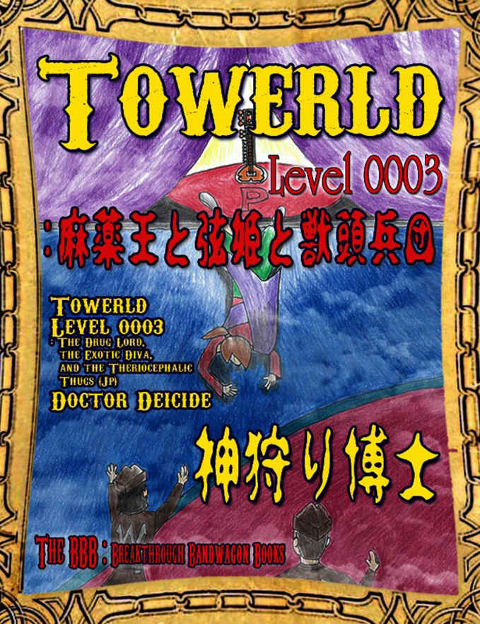

| Towerld Level 0003: 麻薬王と弦姫と獣頭兵団 (The BBB: Breakthrough Bandwagon Books) | |
| 神狩り博士 | |
| The BBB: Breakthrough Bandwagon Books (2015) | |

（邦題『 Towerld Level 0003: 麻薬王と弦姫と獣頭兵団』）
Written by Doctor Deicide
Cover illustration by Polka D
Cover design by Tanya
C opyright © 2014 Doctor Deicide / The BBB : Breakthrough Bandwagon Books
All rights reserved.
ISBN: 978-1-312-14233-6
---01---
今、俺はウェンディと一緒に荷物を 「続きの間」 に届けようとしている。この階層に来てから、今のところは、猛犬や諜報員や破落戸（ごろつき）とは遭遇していない。だが、それでも、全てが順調だとは言い難（がた）い。
軽い目眩（めまい）を覚え、少々浮ついた気分を味わっている。
この階層に来てから、抹香臭さが絶えない。御香の煙と思（おぼ）しき靄（もや）に階層全体が覆（おお）われている模様。慣れて来たからか煙は既に見えないが、空気が澄んでいるとも感じられない。もしかして、これは、麻薬の原料に使われる薬草を燃やす時に出る煙か？これが、鍛冶職人ギディエン・ イェンドゥレイ・ドゥラークトゥレックス （ Gideon Yendrey Drahctrex ）を狂わせたのか？まさか、このままこの煙を吸引し続ければ、俺も？
俺の隣を歩くウェンディに質問しようとしたら、彼女は白色の布製の衛生用マスクを郵便鞄から取り出しているところだった。俺にそれを 1 枚手渡し自分も 1 枚装着した。（然（しか）し、それにしても、その小リスの丸い目が、マスクで益々目立つな。顔が小さいから、マスクが大きく見える。）俺もそれを有り難（がた）く装着させて頂く事にした。その布を通して呼吸すると、喉（のど）への負担が軽くなったような気がする。
この Towerld と呼ばれる塔世界は、階層に分けられているが、それぞれの階層にてそれぞれの世界が存在する。だから、階層に依（よ）って空気が異なっていても全く不思議では無い。この階層が、様々な意味で見通しが悪くて煙たい存在にならなければ良いのだが。（余り期待は出来ないな。）
---02---
異なるのは、空気だけでは無い。耳を澄ませば、奇妙な音楽が流れている。浸水階層や工業階層では、音楽は特に聞こえなかったが。
このような音楽を、俺は生まれてから一度も聞いた事が無い。これは、大型の弦楽器か何かを弾（ひ）く時に、同時に複数の弦を強く優しく緩（ゆる）やかにはっきりと弾（はじ）いて奏（かな）でる音色（ねいろ）だろうか？この中低音にて揺れる余韻を残す弦楽器、余韻が長引くと言うか、音程が常に揺れているようにも感じられる。この流れて長引いて揺らいでいるような音色は、それこそ何らかの煙みたいだ。煙を音楽で表現すれば、このような調べになるのか？
この音楽の齎（もたら）す空気の振動は、空間を捩（ね）じ曲げて、その歪曲（わいきょく）で異界への扉を生成しそうだ。この世界に 魔法 は存在しない筈（はず）だが、これが 魔法 に最も近い現象かも知れない。耳を澄まして聴いていると、幻覚が生じる。俺を煙や音楽と同一の存在に変換しようとしているかの 如（ごと） く、だ。これは、煙に含まれているかも知れない薬物の効果なのか？それとも、音楽の効果？音楽と薬物が互いに作用し合って、独自の相乗効果を生み出しているのかも知れない。
ウェンディはこの体験をどのように捉（とら）えているのか？隣にいる小リスに目を配った。
「ここ で は耳栓は必要なさそうだよね。あたしはこの音楽を悪いとは感じてはいないし」
俺は、この音楽に酔っている。 麻 薬よりも、中毒性が高そうだ。聴き続けると、深層心理が異次元空間に転送されそうだ。その異次元空間は、 Towerld から遠く離れているのであろうか？
---03---
微（かす）かな煙の臭（にお）いと空間を 捩（ね） じ曲げるような音楽の中を、俺達は歩き続けた。走るのが三度の飯よりも大好きなウェンディでさえも、何かに警戒しているのか、速度を大幅に落としている。（御蔭（おかげ）で俺も息切れをしなくて済むから、有り難（がた）い。）
この階層に辿（たど）り着いてからの景色は、煙が無ければ特に代わり映えのしない代物。俺が浸水階層から食品工場を経由して工業階層への脱出を果たした時に見た光景と似ている。（ここではまだ猛犬を見掛けておらんが。）延々と続く廊下と、その両側に並ぶ扉の羅列。 微（かす）か な煙と音楽を除（のぞ）けば、他の階層と区別する要素が見当たらない。但（ただ）し、まだ廊下の両側に並ぶドアを開（あ）けていないので、結論をここで急ぐのもどうかと思う。ドアの向こう側にはこの階層独自の何かが存在するのかも知れない。
ウェンディは数多くあるドアの内の一つの前で立ち止まった。
「ここからが、本番だよ。このドアの軋（きし）みをこの音楽に追加すると、どうなるのかな？」
最初からロックされていなかったのか、彼女は木製のドアを手前に向けて開けた。
---04---
「 ここは図書館か？」
このドアは、長方形の一辺の中間点に位置する模様。この壁の長さは、角（かど）から角まで 100m はありそうだ。
高さ 10m 程の天井に届く金属製の棚（たな）が、俺から見て部屋の右端から左端に幾重にも重ねられるように並べられていた。前方を眺めれば、部屋の中央に置かれた 2 台の棚に挟（はさ）まれた空間を通して、部屋の反対側にある壁を見る事が出来た。連（つら）なる棚が視界を遮（さえぎ）っているので、部屋の全体を見渡す事は出来ない。
どうやら、この棚のために大部屋が存在する模様。
棚に収められているのは、何だ？棚に載（の）せられて並べられた物体を確認しようと部屋に入り込んだ俺は、予想外の光景に対して反応に困った。
「ここは、温室。並べられているのは、植木棚だね」
ウェンディが丁寧に解説してくれた。確かに、大小様々な形状の植木鉢（うえきばち）が、棚に詰め込まれている。植木鉢に植えられている植物も、棚毎（たなごと）に種類が決められている模様だが、俺には何だか良く解らない。加工された食品としての野菜を見た事は昔からあるのだが、実際に植えられた植物をこれまでに滅多に見た事が無かった。
「この奥にある 『続きの間』 を所有する持ち主が、ここで様々な種類の植物を育てているらしい。中でも、一番需要が高くて生産量の大半を占めるのが、幻覚を引き起こす薬品の原料として使われる薬草だって」
「何の原料だ？ 可也（かなり） 、胡散臭（うさんくさ）い臭（にお）いがするな」
色々な意味で。
「ここまで来ると、もう踏み込むしか無いね。配達の仕事を終えてからで良いから、制服の洗濯を手伝ってね」
「洗濯しなくてはならない程に、冷や汗を掻（か）く」とでも言いたいのか？
「何にせよ、ここで人生が変わらざるを得ないような気がするよね」
もう既に変わっていると思うが。
「どうせなら、キミと一緒に、制服だけでは無く、生命（いのち）の洗濯もしたいな」
（その話は、あとにしよう。）
---05---
棚と棚の間を、俺達は歩き続けた。行き先を知っているのか、ウェンディが先導し、俺があとを追った。結局、俺は彼女の揺れる髪を眺めるばかりなのか？（決して悪くは無い眺めなのは認めるが。）棚にぶつかると危ないからか、流石（さすが）にここでは走る気にはなれない様子だ。（それとも、余り器用では無い俺に気遣（きづか）っているのか？）それに、ここで走れば、俺の肺が謎のヤニで汚れてしまうかも知れない。
無理して走らなければ、心と呼吸に余裕が生まれる。棚に並べられた植木鉢と作物を観察してみた。棚に作物の名称が記述されているから、素人の俺にも何だか解る。大半がイチゴやトマト等の果物や野菜の育成に使われているのだが、時々意味不明で用途不明な植物もお目に掛かれる。（それにしても、何のために、モウセンゴケやハエトリソウのような食虫植物を育てるのだ？この作物育成室の持ち主の趣味か？）
---01---
温室の反対側の壁に備え付けられたドアに差し掛かった。この階層全体の構造を把握していると思（おぼ）しきウェンディが躊躇（ためら）い無くドアを開（あ）ければ、その向こう側には同じ構造の温室が待ち構えていた。栽培されている植物は違うと思われるが、作物棚の並び方等は代わり映えがしない。
この階層の大半を占めるのは、このような温室なのであろうか。温室を横切ってはドアを潜（くぐ）り、次の温室を通り抜ける。これの繰り返しだ。迷路に迷い込んだのでは無いのかと本気で感じる程に、温室巡（めぐ）りが続いた。
最初から何番目の温室かは覚えていないが、それまでとは雰囲気の異なる温室に入った時に、目的の 「続きの間」 に辿（たど）り着いたのを感じた。
音楽の音量が益々大きくなっている。音色（ねいろ）が深層心理に食い込みそうだ。油断すると、幻覚症状に見舞われそうになる。目を閉じれば、その音楽が別世界の無限の砂漠を思い出させる。（尤（もっと）も、俺は本物の砂漠を見た事が無いが。）この Towerld と言う建造物の中でのこれまでの生涯が、実は奇妙な夢だったのでは無いかと錯覚しそうだ。現実と夢想の世界がその位置を交換したかの 如（ごと） く。
「もう直ぐ、化け物部屋だよ。気を引き締（し）めて。それから、挑発に乗らないように。彼等は、仮にもお客様だからね」
ウェンディからの警告で、俺は状況を悟（さと）った。声色が、真剣だな。荷物の届け先は、直ぐ目の前の模様。（で、挑発って、何だよ？）
---02---
靄 （もや） の向こう側に、壁と扉が見えて来た。それは、先程から何度も通り過ぎた普通のノブ付きの木製ドアでは無く、両開きの重々しい鉄扉。 「続きの間」 の正面玄関に相応（ふさわ）しいとも言える荘厳さ、そして要害の正門としても機能しそうな防御力を感じさせる。これが、荷物の届け先の 「続きの間」 か？
その扉に近付くに連れて、視界が明瞭になって来る。
扉の両側に配置されているのは、以前俺が本で読んだ空想物語に登場しそうな、頭部のみが動物の獣頭人身の像、では無い。こいつ等は、呼吸している。
まさか、半人半獣が、この世界にて実在するのか？ Towerld は夢や幻想（まぼろし）の世界では無く、現実しか無かった筈（はず）では？
この摩訶不思議な煙と音楽が、俺の精神を破壊しているのか？発狂する前に、考えろ！失ったかも知れない正気を、取り戻すのだ。
冷静に考えて観察すれば、こいつ等は人間だ。彼等は、動物の頭部の剥製から出来た被（かぶ）り物（ヘルメット）で首から上の頭部を完全に隠す兵士達。俺から向かって左側が、馬の頭で、右側が 牛 （水牛？）の頭。両方とも、俺よりも頭 1 つ分は背が高い。詰まり、ギディエンと同じ程度の背丈だ。あの鍛冶職人と比較すると横幅は少々下回るが。
馬男は、白い袖無しシャツに色褪せた鳩目（はとめ）付きジーンズに革製のヴェスト（前開き）。牛男は、革製の鳩目付き長ズボンに、素肌の上半身に直接被（かぶ）せた前開きのデニムヴェスト。（換言すれば、正装とは縁の無い連中だ。）どちらもズボンの裾（すそ）の辺りで銀色に輝く鳩目が目立つ。（その鳩目が俺の人生に影響を及（およ）ぼすとは思えないから、どうでも良いのだが。俺は時々このように然程（さほど）重要でも無い事柄に注意を奪われる。）
どちらのケダモノ頭も武器を所有していないが、素手でも充分に門番として機能できると言う自信の現われか。相手から武器を奪う闘い方を得意とする俺が苦手とするタイプだ。（工業階層の猛犬共を相手に俺は苦戦したよな？）
粗野な一面（全面？）を見せびらかしたいのか？前開きのヴェストに拘（こだわ）っているな。（どちらも、その突き出た太鼓腹を何とかしろ！）神々（こうごう）しき肉体美なんて、作り話や英雄譚（えいゆうたん）の話であって、この Towerld には存在しない。だが、俺には解るのだが、この類（たぐ）いの肉体は、美しくは無くても実用性が高い。油断は禁物だ。こいつ等は何らかの力自慢大会の常連かも知れない。
---03---
これは、 「続きの間」 と言うよりも、阿片窟か？温室で栽培されている薬草をここで加工して、 麻 薬でも製造しているのか？何だか、途轍（とてつ）も無く不味（まず）い物事に俺は首を突っ込んでしまった様子だ。一介の郵便屋が関わっても構わないのか？ウェンディが警告を下したのにも、理由があるのだな。
門番達との距離を置きながら、俺達は静止した。ウェンディは俺を制止し、前に出て門番達に近付いた。（大丈夫か？）
小柄なウェンディは、大男達の胸にも届かない。（胸毛に話し掛けても、虚（むな）し気（げ）なだけだろう。）
「お荷物を届けに参りました」
「うむ」
「ご苦労であったな」
「大切なお荷物ですので、この『続きの間』のご主人様とのご対面そしてお荷物の直接の受け渡しを希望いたしております。ここをお通しいただけますでしょうか？」
一応相手の目を見て話すのが礼儀とは言え、首の骨が折れそうな程に上方（うえ）を見上げるのも大変そうだ。（そこは、俺が手伝うべきであったか？どうやって？）
「そうか」
「ならば、入れ」
門番達は、その筋力に物を言わせて、両開きの鉄扉を開（あ）けた。 可也（かなり） の怪力の持ち主と思われるのだが、それでも全力を注入する必要がある模様。（俺も虚弱体質では無いのだが、この分厚い鉄板を単独で動かせるであろうか？）
牛頭は、ウェンディを見下ろしながら命令した。
「郵便屋ならば、そこのお嬢様に荷物持ちをさせるのじゃ無くて、自分で荷物を運べ」
何？『お嬢様』って、俺の事かよ？
「門番らしく、口数の少ない連中だ」なんて思ったのが大間違い。俺達が開けられた扉を潜（くぐ）ろうとしたら、口数が増えた。
次に口を開（ひら）くのは、馬頭。
「よお、ドブスネズミ、さっさと怪我して引退してくれないか？」
今、馬野郎は、何て言った？俺は、この耳を疑ってしまった。煙を吸引し過ぎて、俺の聴覚が狂ってしまったのか？小リスを彷彿（ほうふつ）させる俺の師匠に対して、同じ齧（げっ）歯類とは言え『ドブスネズミ』は、無いだろう。
「複数の階層にて最高の郵便配達人と呼ばれる程に年季が入るには、あと 10 年は活躍する必要があります。郵便屋殿堂入りを果たすには、そのあと更に 1 0 年は現役で活躍しないと難しいですね」
馬男の挑発を、小リスは切り返した。俺よりかは場慣れしているな。
「その膝を壊してやろうか？走れなくなれば、その如何（いか）にも貧相な身体（からだ）を売るしかねえしな」
「ワシがその貧弱そうな臓器を半値で買ってやろうか、へっへっへ？」
「その前に風呂にでも入ってドブ臭（くさ）いのを何とかしろ」
「『ドブス臭い』のは一生治らんだろうけどな」
馬野郎と牛野郎が交互に立て続けに何かを言いやがる。一応客だからと言って、調子に乗るなよ。（それに、ウェンディは決して臭くは無い！彼女と同居している俺が保証する。）
「あたしの臓器は、高く付きますよ 。 この『続きの間』を質に入れても買えるかどうか、ですね」
（そこまで価値があれば、俺と結婚すれば良いのに。俺ならば、その気になれば、結構な高値でこの小リスを質屋に売り飛ばせるぞ。そんな事をしたいとは流石に思わないが。）
「そんな鶏ガラじゃあ、スープ工場でそこのカマ野郎と一緒にカマ茹（ゆ）でだな」
そこまで言うか、牛男？（小リス師匠だって気にしているかも知れないのだぞ。彼女も、一応、 Y 染色体の持ち主では無いのだ。）然（しか）も、今度は俺の事を『カマ野郎』と言うか？
馬頭と牛頭が、次々と追い打ちを掛けた。
「そこまで丸い目がでかければ、出目金（でめきん）やらガマの干物じゃねえか。闇鍋の材料にもなりゃあしねえ」
「ガマ女郎（めろう）がカマ野郎を連れて来たか」
「鉄拳を 1 発カマしてやろうか？自分の弱さに、ガマんならないか？」
「一々（いちいち）、ワシらもこんなどうでも良いカマ野郎にカマってられるかよ」
獣頭の番人達は、下品に大声で笑い始めた。（それにしても、程度が低くて下らない駄洒落の連続だな。到底異性に持てない中年男みたいだ。知能は浸水階層の魚市場にて屯（たむろ）していた破落戸（ごろつき）共と良い勝負か。）
『ガマ女郎』なんて言われたら、ウェンディも傷付くぞ。だが、俺の師匠は修羅場に慣れている模様。
「馬や牛の骨の方が濃厚で商品価値の高い出汁（だし）が出ると思いますが、何か？」
怒るなよ、 Hector_1304 。こいつ等だって、一応お客様だし。お客様は、王様だ。余り王侯貴族に相応（ふさわ）しい服装だとは言えないが。ここで俺が逆上すれば、郵便局は大事なお客様を失う。それに、この 「続きの間」 の連中は工業階層を含めた複数の階層を裏側から操っているらしいから、敵に回すのは賢いとは言えない。ここで短気を起こしてこいつ等を敵に回せば、俺は消されるかも知れないのだ。 Hector_1304 よ、我慢だ。これ位の仕打ちに耐えられなければ、 Towerld を登り続ける野望は夢のまた夢で終わってしまうぞ。（現時点でも充分に遠い夢の 如（ごと） くだが。）
然（しか）し、俺が怒りの余りに絶句している間にも、ウェンディは次から次へと言葉の応酬で見事な切り返しを披露してくれる。慣れているのか？
「しつこいと嫌われるのは、出汁（だし）だけでは無いかも知れませんね」
正門を通り抜けざまに、ウェンディは一言付け加えた。
---04---
俺も正門を通り過ぎようとすれば、牛頭が眼前に立ち開（はだ）かった。
「止まれ！」
その直後に、俺の腹部から背骨に向かって内臓に長期間残りそうな激痛が走った。馬野郎は腰を少し落とし、床を払ってから天井に向かうような角度で鉄拳を俺の鳩尾（みぞおち）に見舞った模様。
「ぬぐうぅっ」
声にならぬ呻（うめ）き声が、口から漏（も）れず、代わりに血液特有の鉄の味を舌で感じた。
不覚。不意討ちを警戒していたこの俺に、不意討ちを食らわせるとは。この打撃の激しさのみならず全身を串刺しにするような『深み』からすると、この馬男は唯（ただ）単に『でかい』だけでは無い。戦闘能力は、 可也（かなり） 高い。危険だ。これ 位 で無くては、門番は務まらないのか？この門番から、この 「続きの間」 の主人が途轍（とてつ）も無く危ない存在である事も推察できる。（ 麻 薬王だと噂されている時点で、充分に雰囲気が剣呑だが。）
悲鳴も出せない程に、この衝撃は半端では無い。液化した鉛を呑（の）み込んだのかと思う程だ。身体（からだ）と魂の表裏がひっくり返ったかと思った。俺は自分の腹を抱え、跪（ひざまず）いてその場で蹲踞（うずくま）った。
「うぬごほああっ！」
それだけでは足りないのか、今度は牛野郎が俺の顔面に蹴りを喰らわせた。今度は不意討ちでは無いが、それでも頬骨が砕けたかと思った。血痰（けったん）を吸い取ったマスクは衝撃を受けて剥がされ、二度と使えない状態になった。
馬野郎は、床の上で苦しむ俺を見下（みお）ろし見下（みくだ）しながら、自分の拳を擦（さす）った。
「こいつ、腹筋あるのか？深窓の令嬢並みの鍛え方だな。妊婦の腹の方が余程頑丈だぜ」
そんな、 莫迦（ばか） な。俺だって一応浸水階層では漁師として生業（なりわい）を立て続け、現在も郵便配達人として常に全力で走り回っているのだぜ。可愛いけど厳しい小リス先生に鍛えられているのだ。（それに、こいつは『深窓の令嬢』やら妊婦の腹に拳を入れた事があるのか？だとすれば、可也（かなり）の鬼畜だな。家畜にも成れない鬼畜か。）
「俺達は、一応正式な郵便屋に通過の許可を与えたのだぜ」
「小娘の尻を追い掛けるので忙しい同性愛に溺（おぼ）れたお嬢様には、用は無いんだよっ」
「『ドブスネズミ』の雑用係か」
何をおっ！こいつ等、明らかに俺に喧嘩を売っている。売られた喧嘩ならば、買うべきか？ここで暴力に対抗して反撃してこそ、塔世界を登り続ける英雄では無いのか？
「ヘクトァ！」
俺が反撃しようとすれば、ウェンディが間に割り込んで仲裁に入った。巨漢の前に跪（ひざまず）いて、頭を下げた。
「申し訳ありません。この者は、あたしの見習いであります。荷物持ちを兼ねながら、仕事を覚える必要があるので、この 『続きの間』 に入る許可をあたしのみならず見習いにも頂けると有り難（がた）いと思います。宜（よろ）しくお願いいたします」
こんな奴等に頭を下げる事も無いだろう。俺が何かを言おうとすれば、小リスは俺を手で制した。
「どうかお許し下さいませ」
ウェンディが余りにも深々と頭を下げるので、門番達も俺に対する入室阻止を諦（あきら）めた模様。
「わかったよ」
「しょうがねえなあ」
「そんなにこのドブスネズミが頼むのであれば、な」
ウェンディは俺の隣に近寄ってから背後に回り、その腕を俺の肩と背中に回した。（俺を物理的に押さえて、暴れそうな俺を抑（おさ）えようとしているのか？俺が暴走しそうな事を考慮に入れれば、それは正しい判断かも知れない。）
「大丈夫？」
「ぬううっ」
正直、大丈夫では無い。だが、ここで弱音を吐きたくは無い。（血液を吐きそうだが。）
「自分がどれ程に辛（つら）い目に遭（あ）おうとも、お客様は王様だよ。一部の例外はあるけどね」
暴君と言いたいところだが、立場上、ここでは言えない。こいつ等は、暴君にも成れない暴漢じゃねえか？
馬頭は、容赦無く言葉の暴力を浴びせ続ける。
「正門の前で下品なメス犬同士で傷を舐（な）め合っていると、 『続きの間』 の品格が下がる」
牛野郎も、それに続く。
「郵便屋としての仕事を遣（や）る気が無いなら、さっさと帰れよ。この寛大なワシがエサでもくれてやろうか？」
こいつ等、俺の逆鱗（げきりん）を刺激し続けるのか？抑（おさ）えろ。抑えろ。
口の中に何処（どこ）から来たのか不明な血液が溢（あふ）れている。それを隠しながら、俺は郵便配達人の名札を提示した。「名札がポケットの中に隠れていたから、郵便配達人だとは気付かなかった」なんて言わないだろうな？
「一丁前に名札を持っているぜ」
「生意気に」
「飼い犬のタグ（ dog tag ）だな」
「もっと解り易（やす）いように着けろよな」
一々（いちいち）、うるせえんだよ、ケダモノ頭共がよおっ。
馬野郎が、態（わざ）とらしく恭（うやうや）しく頭を下げて、手振りで 「続きの間」 の奥を示した。
「こちらへ、どうぞ、お嬢様。さっさと動かんと、今度は骨を圧（へ）し折るぞ」
牛頭も余計な一言を付け加えた。
「結局、臭そうなドブスネズミのあとを追い掛けるしか出来ないのか？これでは、出目金の尻にくっ付いて離れられない何とやらだな」
この野郎！客じゃ無ければ、何度でも殺してやりたい。否（いや）、客でも殺したい。
だが、我慢だ。ウェンディだって一生懸命に耐えている。ここで俺が我慢できなければ、弱さを露呈して自（みずか）ら認めるだけだ。時には自分を抑（おさ）えるのも、戦いなのだ。傍（はた）から見て格好悪いかも知れないが、ここは我慢だ。唯（ただ）の多血漢に成り下がる必要は無い。耐えろ。
それに、ウェンディを無職にしたくは無い。まあ、この愛（いと）しき小リス師匠のためであれば、多少の屈辱や激痛に耐えられるか。（多少ならば。）
---01---
正門を通り抜けて最初の部屋は、複数の調度品に飾られたロビー（大広間）。それを通り抜けて、 「続きの間」 の奥へと続く通路に入った。
床は複雑で派手な模様の絨毯（じゅうたん）で覆（おお）われている。顕微鏡で観察した微生物を描いているみたいだ。
妙な音楽の音量が、より大きくなっているような気がする。 「続きの間」 の内部は、それまでの温室よりも暗い。態（わざ）と照明を落としているのか？ここで下手にこの雰囲気に慣れてしまうと、二度と真面（まとも）な人間に戻れないような気がする。（俺が元来普通の人間であったらの話だが。）
俺達は暗い通路を奥へ奥へと進み続けた。通路は、「続きの間」の外にある廊下よりは幅が狭い。俺が予想していたよりも、この 「続きの間」 の占める面積は大きい。それでもウェンディは迷わないで歩き続けている。（彼女がここに来るのは今回が初めてでは無い。）
---02---
足を前に踏み出す度（たび）に、鈍い痛みが腹から背骨を伝って全身に拡（ひろ）がる。このしつこく残る痛みが打撃の重さを物語っている。やはり、あの門番達は徒者（ただもの）では無い。
痛みを無視して歩こうとしても、奴等から喰らった仕打ちを忘れるのは容易では無い。そのように比較的些細（ささい）な事柄をさっさと忘れるべきなのだが。新しい衛生用マスクをウェンディは渡してくれたし、それを俺は有り難（がた）いと感じる。だが、俺の奴等に対する怒りはマスクを着用しても消えない。
「それにしても、何だ、あいつ等は？無礼にも程って物があるだろうに」
無礼な門番達への怒りを鎮（しず）められぬ俺は、ついつい悪態を吐（つ）いてしまった。（「続きの間」の各所に配置されているであろう使用人が聞いているかも知れない。）
「まあまあ、落ち着いて。あたしも慣れているから」
ウェンディは俺の肩に手を置いて宥（なだ）めようとした。
「キミの目的は、 Towerld の階層を登り続ける事。その踏み台として、郵便配達人の仕事を欠かす事は出来ない。このように些細（ささい）な事でこの仕事を台無しにしたら、元も子も無いよね？」
それは、正論だが、年下（だよな？）の少女に言われると、俺の 情け無 さが浮き彫（ぼ）りになる。
「どうしても怒りが収まらないのであれば、あたしと話を続けたら良いと思う。キミの激情を鎮（しず）める効果に関しては、香草がたっぷり入った温（あたた）かい 1 杯のお茶にも負けない自信があるし」
「確かに君は抹香にも負けない位に良い薫りがするよな」
「ねえ、それって、褒（ほ）めているの？」
「俺の好きな抹香よりも気に入っているのだから、褒（ほ）め言葉です、師匠」
「煽（おだ）てても、無駄、だよ」
（その割には、マスク越しにも解る程に嬉しそうだな。解り易（やす）いのう、この小リスは）
「そりゃあ、あたしだって、あれ程に真面（まとも）とは言い難（がた）い服装の連中にあのような事を言われて殴られたら、面白くは思わないけどさ。あの連中を廃棄物として処理したい気持ちは、解るよ」
さっきから、冷静さを失っているのは、俺の方だ。本来ならば、俺が彼女を宥（なだ）めなくてはならないのでは？
「それに、正直に言うと、キミではあの巨漢達には勝てないと見ている。とある情報筋に拠（よ）れば、あいつ等の強さは半端では無いらしい」
はっきりと言うな、この小リス先生は。悔（くや）しいが、それも正論だから、俺には反論の余地が残されておらぬ。（彼女は俺を傷付けずに正直に意見を述べられるのだな。）
俺が黙っていれば、彼女は俺の胸部にその顔を近付けた。（本当は俺の耳に何かを囁（ささや）きたかったのだろうが、彼女の背丈ではそれは無理な模様。）
「あたしが加勢すれば、何とかなったかも知れないけど、手出しをしたらあたし達両方とも失職は確実だからねえ。軽量級のあたしを面倒な事に巻き込みたくないから、キミはあそこで大人しくしたのだよね。 有り難 （がと） う 」
「否（いや）、腹部の激痛の余りに、反撃に転じられなかっただけだが」
それを口にしなくても良かったのだが、ウェンディには何も隠したくない俺は正直に述べてしまった。失言したかも知れない俺に対して、小リスは苦笑を隠さず。
「キミのそう言う部分（ところ）が、また何とも」
何とも、何なのだ？
「我慢強さも強さだね。あたしは強い弟子に恵まれて、幸せだよ」
褒（ほ）められた様子だが、素直に喜んで良いのか？（まあ、悪い気はしないが。）
---03---
「続きの間」 の奥まで通路が続いている。随分と巨大な 「続きの間」 だな。この階層その物よりも巨大なのかと感じる程だ。（流石に、それは有り得ないが。）
ウェンディは途中で立ち止まった。
何事かと俺も一緒に足を止めた。
小リスは俺に向き直り、俺の目を見上げた。
「あたしの靴の紐（ひも）を縛ってくれるかな？」
いきなり、何を言う？ここでか？
「何でだ？」
「いいから、いいから。復讐は後回しに出来るし。それに、早くしないと、この 『続きの間』 のご主人様を待たせて怒らせてしまうよ」
俺には彼女の真意を読めない。マスクで隠れているが、その目許（めもと）の様子から察するところ、口許（くちもと）に悪戯（いたずら）っぽい笑（え）みを浮かべている感じだし。何か理由があるのだろう。俺は彼女と向き合ってから跪（ひざまず）いて、スニーカーと対面した。（眼前に彼女のベルトが迫っている。）
紐（ひも）は、しっかりと縛られているが。
「解（ほど）けていないぞ」
小リスは自慢気（じまんげ）に胸を張った。
「そりゃあ、そうだよ。あたしは異常な速度で長時間走り続けるから、そう簡単には解（ほど）けないようにしっかりと念入りに縛るのだよ。あたし以外の者では、解（ほど）けないかもね。大事な商売道具の手入れは、唯（ただ）単に汚れを落とすだけでは終わらないのです。ふふーん」
「ならば、何故紐（ひも）を縛るように頼んだのだ？」
「キミに跪（ひざまず）いて欲しいから。キミはあたしよりも背が高いからね え 」
俺の思考が、彼女の言葉に追い付いていない。
彼女は、俺の制帽を左手で外した。俺が反応を示す前に、小さな右手が俺の頭部に乗せられた。
「はい、いい子だから、機嫌を直してね〜」
俺の頭を、撫（な）でた。何で？そのために、俺に跪（ひざまず）かせたのか？門番に『お嬢様』や『カマ野郎』と呼ばれるだけでは無く、年下の少女に『いい子』呼ばわりされる俺って、何だよ？俺って、そんなに 情け無 いか？俺は、小僧や愛玩動物では無いぞ。
ここは、この現実、そしてウェンディからの気遣（きづか）いを受け入れるしか無い。（尤（もっと）も、形はどうであれ、彼女が俺の事を決して嫌ってはいない事実その物であれば、喜んで受け入れるのだが。だが、然（しか）し、なあ。うーむ。）
「師匠は、俺の事を何だと思っているのか？」
「キミはあたしの愛弟子だよ。吠えない番犬以上の価値があるのを、このあたしが保証します」
何だか、なあ。（理由は不明だが、犬になって彼女の靴に噛（か）み付きたくなった。そうすれば、この恥ずかしさや嬉しさを複雑に巻き込むような正体不明の現実から一時的にでも逃避できそうな気がする。）
---04---
現実逃避とは言うのだが、現実から逃避しても現実は変わらない。ここは気を引き締（し）めて、今取り掛かるべき配達に専念しよう。
「御蔭（おかげ）様で、機嫌は直りました、小リス先生」
「それならば、一緒にこの荷物を届けようね」
「ああ、じゃ無くて、はい」
確かに、俺の奴等に対する怒りは、（一時的かも知れないが）鎮（しず）まった。これも、彼女の人柄の賜物（たまもの）だろうか？
郵便配達人として、数多くの胡乱（うろん）な客と出会（でくわ）したのだろうか？苦労を知っている様子だ。俺は、もう少し郵便配達人としての修行を重ねて、ウェンディの仕事仲間に相応（ふさわ）しい存在に成りたい。 Towerld を上に向かって登り続けるのも当然大事なのだが、その前にやれる事があるかも知れない。
当然、このままで終わらせる予定では、無い。
---01---
通路は、 「続きの間」 の最深部と思（おぼ）しき場所で終わっていた。正門程に重たそうでは無いが、蔦（つた）の模様が施された木製の両開きの扉が通路の終わり、そして裏の世界の始まりを象徴していた。ここまでで既に怪しい空間を充分に堪能して来たが、この扉の反対側にいると思われる 麻 薬王が、ウェンディと俺を蟻地獄に引き摺（ず）り込みそうな雰囲気だ。（ 麻 薬王である噂は、どうやら嘘では無い様子だな。）
荷物を置いて、荷物を受け取って、さっさとここから出て行こうか？
否（いや）、待てよ。折角暴行を受けてまでここまで来たのだ。どうせ、もう、引き返せない。この音楽が、空気に酔った深層心理に丸で眼前の扉に 刻（きざ） まれた蔦の 如（ごと） く絡（から）み付いて来て俺を引き止めようとする。
毒を食らわば、皿まで。 麻 薬王と接触し、情報を引き出すか。俺が Towerld を登り続ける上で欠かせられない重要な活動かも知れない。この 「続きの間」 を恐れているようでは、ここより上の階層に向かう事は不可能だ。
---02---
付近にて待機していた使用人達が、蔦模様のドアを開（あ）けた。好奇心に抗（あらが）えない俺は、左右に開（ひら）かれる扉の隙間から目を離せず。
予想通り、扉の向こう側には広間が待っていた。これは、謁見（えっけん）の間（ま）か何かだろうか？壁に掛けられた燭台（しょくだい）の蠟燭（ろうそく）が、微（かす）かな光を薄暗い部屋に投げ掛けていた。
真正面には、玉座。その両側には、正門の門番のように野獣の剥製を頭から被（かぶ）る兵士が待機していた。（ここでは、被（かぶ）り物がステイタスか何かだろうか？俺には理解できない流行だな。）俺から向かって左側は、山羊（やぎ）を基（もと）にしている模様。山羊の仮面は首から上を全て隠していた。白い丸首袖無しシャツと黒の長ズボンには、裾（すそ）の鳩目以外には何の工夫も感じられない。俺から向かって右側は、野ブタだろうか？膝で切ったデニムのズボンそしてベルトの上に、肥え太って食（は）み出た腹の肉が乗っかっている。（唯（ただ）太っているだけでは無く、力はありそうだ。）野ブタのヘルメットは頭の上半分のみを隠して顔の下半分を出している。豚の頭の兜の後部から垂らされる豚の毛皮が背中に覆（おお）い被（かぶ）さり、マントルの 如（ごと） く腰まで伸びていた。何の捻（ひね）りも無い白い袖無しシャツを、毛皮のマントルの下に着ている。無駄に伸びた赤髭は醜男（ぶおとこ）である現実を隠せず、そして変えられず。両方とも、正門の門番同様に、やたら巨大だ。見栄（みば）えは、霊長類の恥とも言える程に最低だが、木偶（でく）の坊では無い雰囲気を漂（ただよ）わせていた。（そこまで不細工でありながら衛兵として雇われているからには、実力があるに違いない。）
美しく無いのは、獣頭兵達のみに非（あら）ず。玉座にて偉そうに踏（ふ）ん反（ぞ）り返るは、背が低くて太っていて頭の禿（は）げた中年男。チビ、ハゲ、デブの女が最も嫌う三拍子が揃（そろ）っている。禿げ方も中途半端で、額から頭の天辺が禿げ上がり、左右に残された巻きの入り脂ぎっていて茶色い頭髪を無理矢理延ばしてそれを頭の天辺に流して禿頭（はげ）を隠そうとしている。生え際（ぎわ）も往生際（おうじょうぎわ）も悪いな。どうせなら、ギディエンみたいに徹底して全て剃（そ）り落とせよ。服装は、安っぽい似非（えせ）勲章で覆（おお）われたディスダーシャ（ dishdash ）やらジュバ（ jubba ）やらサウブ（ thawb ）と呼ばれる上着と長いズボン。生地の模様が派手だが、俺が足で踏み付けている絨毯（じゅうたん）から切り取ったみたいだ。座っているからよく解らないが、背丈も多分ウェンディより少々高い程度だろうな。自分の醜悪な容姿を更に悪くする事にしか興味を抱かないのか、余計な事ばかりをしている。自分の禿頭（はげ）を誤 魔 化すためかどうかは知らないが、汚らしい顎髭（あごひげ）を伸ばし、それを輪ゴムで縛っている。茶色い顎髭と緑色の輪ゴムの色彩的な対比にこだわっているのかも知れないが、正直美しくは無い事には変わりは無い。
ここで思ったのだが、こいつはマスクを着用していない。煙たいとは感じないのか？もう、この煙には慣れたのか？（何にせよ、その醜い顎髭が邪魔か？）この煙は、どうやら毒を含んでいる訳では無い模様。「続きの間」が全体的に薄暗いので解り辛（づら）いのだが、使用人達もマスクを着けていなかったような気がする。この御香の煙が幾ら人畜無害だと考えられるとは言え、まだ慣れていない俺はマスクを取り外そうとは思わないが。まあ、それはともかくとして。
この中年男は、美しさの概念とは縁の無い存在。これでは、いくら裏階層での実権を握って富を手に入れても、幸福には、なれない。醜くなってまでも、権力を手に入れたいのか？
---03---
こうやって見渡して感じるのだが、どいつもこいつも不細工だ。遭遇する者達が美男美女の集団とは行かないのかね？
俺が読んだ幻想物語やら神話では、そこら辺の通行人でさえも美男美女の集団だが。強敵も美形。『偶然』出会う異性も美形。颯爽（さっそう）と登場する英雄も、世界征服を企（たくら）む悪役も、美丈夫（びじょうふ）。外見も中身も、神々（こうごう）しい。文武両道だの才色兼備なんか、当たり前過ぎて市場価値が暴落している。過去の文明から受け継がれたとされる様々な作り話が出来過ぎなのは、所詮は作り話だからだ。
俺の眼前に迫る重苦しく息苦しく暑苦しい醜（みにく）さ。そう、これが、現実だ。
これまで俺が出会（でくわ）して出会（であ）った者達の中で唯一（ゆいいつ）醜くは無いと胸を張って言えるのが、俺の師匠、ウェンディエトゥラ・ネヴァリテュアープ（ Wendietrea Nevaryt-Terp ）だ。だが、彼女だって小動物の 如（ごと） く可愛らしいのであって、神々しいとは思えないし、神話に登場しそうな女神とは趣（おもむき）が 可也（かなり） 異なる。『可愛い』と『美しい』と『麗（うるわ）しい』の違い、か？（ウェンディには今のままでいて欲しいとは思うが。）
---04---
俺達は、この中年男の前で跪（ひざまず）き、恭（うやうや）しく頭を下げた。（一応、お客様だし、な。）
醜男（ぶおとこ）の代表格は、一度咳払（せきばら）いをしてから俺達に対して面倒臭そうに言葉を発した。
「初めて見る顔だな、そこの小僧」
『小僧』だと？俺の事かよ？（『お嬢様』呼ばわりされたあとでは、それ程に腹が立たないな。）
ここで一応自己紹介をしておく必要があるだろう。一度咳払いをした。
「私の名前はヘク...」
だが、始まる前に遮（さえぎ）られた。
「もう良い。御主の名前等、どうでも良い。耳障（みみざわ）りだから黙っておれ」
目障（めざわ）りな初老寄りの中年男が、偉そうに言うなよ。一応客だから、仕方が無く許してやるがな。
「そこの小娘も助っ人に頼りたくなったか」
ウェンディの事を『小娘』とは。彼女は『小リス』だ。失礼な。
「助っ人にしては、頼り無さそうだな」
両脇にて待機するブタ頭とヤギ野郎も、主人の余分な一言に反応して鼻先でブヒブヒ嗤（わら）っていやがる。何がそんなに可笑（おか）しい？俺の実力を知らないのか？今ここでその鼻の骨を圧（へ）し折りたい衝動を抑（おさ）えるので精一杯。（ここは我慢だ。）こいつ等も門番達と似たような物か？
「一応、 自己 紹介しておこう。儂（わし）は、この 『続きの間』 の主人であり、複数の階層にて様々な事業に携（たずさ）わるガウドゥ事業団（ Ghoude Corporation ）の団長を務める、ハルゥーム・ガウドゥ（ Haloom Ghoude ）だ」
麻 薬王の分際で、生意気にも自分の事業団を運営しているのか？それとも、それは覆面組織か？裏階層を支配している者が、何を 今更（いまさら） 全（まっと）うな名称で自分の組織を誤魔化すのか？
こんなどうでも良さそうな風貌の持ち主でも、フルネイムを持っているのか？ ID コードしか与えられていない俺が、安っぽく見える。然（しか）も、自分の名前を冠する組織の頂点にて君臨するとは。今の俺は劣等感に苛（さいな）まれているのか？名前の事なんか些細（ささい）でどうでも良い事では無いのか？
「ああ、鍛冶屋からのアレを持って来てくれたのだな。ご苦労」
『アレ』って何だよ？その言い方からすると、重要なブツなのかどうかも判別が付かぬ。ここで大人しくブリーフケイスを手渡せば、俺の任務は完了だ。だが、それでは、物足りない。俺は、多くの情報を掻（か）き集めるために郵便配達人になったのだろう？それならば、ここでハルゥームから情報を吸い出すのが得策では無いのか？折角ガウドゥ事業団の本部と思（おぼ）しき 「続きの間」 の奥深くまで乗り込んだのだぜ。この機会を無駄にしたくない。
跪（ひざまず）いた状態から荷物を恭（うやうや）しく差し出しながら、質問を投げ掛けた。
「ここで訊（き）くのも野暮ったいとは思われますが、この荷物の中身は何でしょうか？」
「御主（おぬし）如（ごと）きが知る必要があるのか？」
その見下した口調、気に食わねえな。だが、こいつも客だ。お客様は、 麻 薬王様だ。
「貴方様は、我々に取ってはとても大切なお客様なのです。今後も様々なお荷物の運搬を我々にお任せ頂く事になると思いますが、その場合に、中身が解らないと郵送方法を誤ってしまう可能性も出て来る訳なのです。そこで、どうしても中身を知っておきたいと考える次第なのであります」
ギディエンは『最高傑作』とか言っていたが。
「そうか、ならば教えてやろう」
どんどん情報を溢（こぼ）れ出させろ、門番のズボンのウェイストバンドに乗っかって溢（あふ）れ出る腹の肉のようにな。
---05---
「この中身は、楽器だ。あのギディエン・ イェンドゥレイ・ドゥラークトゥレックス （ Gideon Yendrey Drahctrex ）が製作した楽器だからな。当然、見栄（みば）えだけでは無く楽器としての機能も充分に果たす。丸で、 魔法 でも宿っているかの 如（ごと） く、だ。この世界には 魔法 は存在しないが、あの鍛冶職人の腕前と薬物を組み合わせれば、作品に 魔法 を宿らせるかのようだ」
楽器だと？楽器と言えば、音楽。この 「続きの間」 にて鳴り響く音楽と、関係があるのか？相手の言葉を途切れさせないように、更に質問を投げ掛けた。
「その 魔 性（ましょう）の楽器を演奏するに相応（ふさわ）しい音楽家が、今この音楽を演奏されていらっしゃるのでしょうか？」
「他に、誰がいるのだ？」
ハルゥームは 呆（あき） れた表情を見せつつも、何かを自慢したがっている様子。そこを突（つつ）けば、情報を頂ける。
「あなた様専属の、宮廷音楽家でしょうか？何せ、私のような下々（しもじも）の者には縁遠い存在ですので。だからこそ、私も少しは耳に入れておきたいのです」
今度は、座ったままで上半身を前に傾（かたむ）けた。（その体型でその姿勢は、腹を圧迫しないか？）
「くっくっくっ。そうか、そんなに知りたいか？」
勿体（もったい）振らずに、さっさと教えろよ。
「ならば、教えてやろう。何時（いつ）になるかは不明だが、そう遠からぬ未来に、この塔世界 Towerld の上層階の何処（どこ）かにて、 Towerld の歴史に残り Towerld の将来をも左右し兼ねない程に大掛かりな祭事が催（もよお）される予定だ。その際、様々な道具が使われ儀式が執（と）り行なわれるのだが、そこで必要なのが、特殊な楽器で演奏される音楽。その時に使う横 笛 が、このブリーフケイスに収められているのだ。唯（ただ）横 笛 をその儀式で準備するだけでは、駄目じゃ。それを演奏するのに相応（ふさわ）しき横 笛 の奏者が必要となる。 Towerld 高しと言えども、それを儀式にて真面（まとも）に演奏できるのは、儂の知る限りでは儂の専属音楽家のみ」
---06---
その情報の洪水に、俺の思考回路が付いて行けない。だが、ハルゥームの自慢はまだまだ続く。
「折角だ。ここで会ったのも、何らかの縁だ。紹介しよう。これが、儂の自慢の歌姫！否（いや）、『 弦姫 （つるひめ）』と呼ぶべきか？歌も上手（うま）いが、複数種類の楽器演奏そして作曲をも熟（こな）す才能の持ち主じゃ。作詞が少々苦手なのが残念だが」
ハルゥームは彼から向かって右側（俺達から見て左側）に向き、手を叩いた。
「我が 『弦姫』 よ、こちらに来なさい」
部屋が薄暗くて気付かなかったのだが、入り口から眺めて部屋の左側には、幕が降ろされていた。幕の反対側には、舞台が設置されているのだろうか？幕の材質は薄いので、眼を凝らせば幕の向こう側を見られるような気がする。
待機していた使用人が 2 人、幕を左右に引っ張って開（ひら）いた。
やはり、舞台がその姿を現わした。舞台の中心にて小型の絨毯（じゅうたん）が敷かれ、その上にて女性と思（おぼ）しき人間が 1 人腰掛けている。あれが、 『弦姫』 様か？
軽くて長い紫色が鮮やかな無地の布を何回も全身に巻き付けた、縫い目の無い服装だ。確か、サーリ（ sari ）とか言ったな。その下には緑色のペティコートやら真っ赤な長袖のブラウスらしき物を着用している。舞台の上は少々薄暗い謁見（えっけん）の間（ま）よりかは明るく照らされているので、その服装に使用されている色彩の鮮やかさが充分に目立つ。俺が今までに実際には見た事も無いファッションだ。
その服装同様に俺の目を引くのが、大型の弦楽器。腰掛けている傍（そば）にて絨毯（じゅうたん）の上に共鳴胴を置いて斜めに立て掛けるように演奏している。棹（さお）は、それこそ演奏者の手が先端まで届くのか心配になる程に長い。弦の本数が、多い。確か、実際に手では触（さわ）らない共鳴弦とやら言う物も、多く含まれている。これは、スィター（ sitar ）か？昔、何かの本で読んだ事がある。俺の深層心理と共鳴しそうな独自の余韻は、その共鳴弦から来るのか？どうやら彼女がこの階層全体に響き渡る音楽を演奏してそれを何らかの方法で放送していたのだな。
サーリもスィターも充分に俺の目を引くのだが、それよりも地道に強く輝くのが、それらを纏（まと）って操る人物。
肌は、褐色と言うよりも、薄い赤銅色（しゃくどういろ）に近いかも知れない。サーリを含む服装の色彩そしてスィターの木目調との調和が、（理由はよく解らないが）歴史の深みをも感じさせる。（それは、 Towerld の創世以前の歴史の名残りなのであろうか？）自然、顔の方にも注目が行くが、眼を向けてしまった事を後悔させる程に、俺は息を呑（の）んでしまった。（走るのが大好きな小リスの御蔭で、俺は常に呼吸が足りていないのだが。）
茶色い髪は、首筋に届かないように後頭部で纏（まと）められている。顔面の彫（ほ）りは深く、長髪で誤 魔 化すのが勿体（もったい）無い程に綺麗に整っている。丸くは無いアーモンド型の大きな両眼は灰色で、その色彩をも無意味にする程に強い光を放（はな）っている。（その眼光が、音楽の才能に因（よ）る影響なのかそれとも意志の強さの賜物（たまもの）なのかは、そこでは判断できず。）強い眼を観ると、俺の魂が吸い込まれそうだ。「眼球は脳裏の鏡」と言われるが、この者が何を考えているのかは解らない。だが、何だか高貴な雰囲気を醸（かも）し出している。
その者を、唯（ただ）単に『美人』だの『美女』等と言う使い古されて陳腐で信用ならない言葉で表現するのは、人類が生み出す様々な美の基準に対する冒涜（ぼうとく）とも言える。「人間が女神やらに遭遇して、その光り輝く美しさに眼と心が潰（つぶ）された」と言うのとは、全く異なる。先祖の代から伝えられる様々な神話では、人智を超越した美貌を誇る存在（女神？）を太陽やら恒星の輝きに喩（たと）えるが、この 『弦姫』 様の美しさはそれとは別の次元を形成している。「光り輝く暁天（ぎょうてん）の明星（みょうじょう）」、と言うよりも、「重力嵐の中心にて空間を 捩（ね） じ曲げる暗黒星」の 如（ごと） く、だろうか？（これは、褒（ほ）め過ぎか？）「爆発するように光り輝く」と言うよりも、光と魂を俺から奪い取って吸い込みそうだ。その上、薄い赤銅色の肌が、別の次元を追加している。（尤（もっと）も、この 『弦姫』 様も所詮はこの不完全な世界の人間なので、神話の女神や天体と比較する訳には行かないが。）俺が昔読んだ何らかの物語にありそうな展開だが、「主人公が異国の地の砂漠で王国の姫君と遭遇した」と言う感じ、か？（俺は自分の発想の貧困さに 呆（あき） れてしまう。俺は本物の砂漠のみならず神々やら星々を知らないから、想像に任せるだけで終わりそうだが。）これは、 異階情緒 とか言う奴か？俺がこれまでに知らなかった美の基準を、この者は提供している。
麻薬王同様に、この 『弦姫』 様もマスクらしき物を何も顔面に着用していない。これ程の造作（ぞうさく）の顔を隠したりしたら、それこそ勿体（もったい）無い。
「色の白いは七難隠す」と言うが、あれが唯一の真理と言う訳では無さそうだな。今、俺の眼前にてその存在を示す 『弦姫』 様に関して言えば、「黄金（こがね）色も七難隠す」だ。このような美の基準も存在する。色白だけが美の基準では、無い。
尤（もっと）も、この 「続きの間」 にて働いている周囲の人間が、余りにも不細工なので、彼女の特異な美しさが益々際立っているのかも知れないが。この引き立て役共の前では、駄馬も駿馬（しゅんめ）に見えるよな。（馬と言えば、嫌な物を思い出してしまった。）
---07---
『弦姫』 様はスィターから手を離して、演奏を終わらせた。
それまで空気の 如（ごと） く空間を支配していた音楽が、鳴り止んだ。唯（ただ）単に演奏を停止させたのでは無く、アウトゥロ（ outroduction ）できちんと纏（まと）めている。（磁気テイプに記録された録音音楽では無いから、フェイダウト（ fade-out ）などと言う如何様（いかさま）は通用しない。）
『弦姫』 様は、優雅な物腰で立ち上がり、こちらに向かって歩を進めようとした。俺は、この滲（し）み出すような異階情緒に圧倒されそうだ。
その「 異階情緒 の化身」とも言える存在が流れるように歩（あゆ）むのを想像し、自分の深層心理がそれこそ俺の知らない 異階 へと繋（つな）がる錯覚を覚えようとしたその刹那（せつな）、彼女の腰が砕けた。
「あえあっ」
彼女は、間抜けな悲鳴を上げながら無様に倒れた。耳障（みみざわ）りで鋭い衝撃音では無 く 、肉塊が硬い板の上に叩き付けられたような（鈍いのだが耳に心地良い）音を立てた。舞台の上でも絨毯（じゅうたん）の敷かれていない部分にその肢体を打ち付けたのだろう。
目の前の信じられない光景に、俺は反応する事さえをも忘れた。これは、何らかの演出か？否（いや）、違う。彼女を玉座に呼び寄せているハルゥームでさえも 呆気（あっけ） に取られた表情を隠せないでいる。
足が攣（つ）るから『攣る姫』、なんてな。それとも、床の上でつるつる滑るから『つる姫』。（俺は下らない事を考えてしまった。）
全身を摩（さす）りながら、恥ずかしそうな表情を隠せない 『弦姫』 様はゆっくりと立ち上がった。
「ごめんなさい。足が 痺（しび） れていたもので」
俺は自分の耳を疑った。その優雅で上品な物腰や見掛けに依（よ）らずに、意外とお間抜けな 『弦姫』 様のご様子ですな。
余り、運動能力は高そうでは無いな。彼女も、一芸に秀（ひい）で過ぎたがために、何かを失ったのか？才能が音楽に集中したのか？ウェンディの場合、速度や素早さに能力が特化されている。極端な程の専門家が多いのか？（尤（もっと）も、高（たか）が人間の分際で、全ての分野にて秀でる事等到底不可能なのだが。）
実は最初から余り気にしていないからか、気を取り直す素振りをそれ程に見せずに、 『弦姫』 様は舞台の縁（へり）に腰掛け、両足を謁見（えっけん）の間（ま）の舞台と比べて低い床に向けて垂らした。（その格好で両足の 痺（しび） れを抜くのか？）
「何だか、じわりと来ますわね。丸で、わたくしの音楽みたい」
何を意味しているのだ？
何だか不自然な沈黙に覆（おお）われてしまったその場に軌道修正を掛けようとしたのか、 『弦姫』 様はその格好のまま言葉を発した。
「お客様にこの格好で話し掛けるのは失礼だとは承知しておりますが、このまま沈黙を続けるのも辛（つら）いと思われますので、ここで自己紹介をさせて頂きます。わたくしは『歌姫』とも 『弦姫』 とも呼ばれております、メァリー・ティーナ・ブロックァートゥ（ Mary Teana Blockheart ）。ガウドゥ事業団専属の音楽隊のバンドマスターを務めております。控（ひか）え目に申し上げますと、自慢ではありませんが、音楽関連では自慢できる腕前を誇っております。得意な楽器は、各種弦楽器に各種管楽器にその他諸々（もろもろ）。作詞作曲何でもお任せ下さい。作詞よりも作曲の方が得意ですが。以後、御見知り置きを〜」
営業活動に聞こえなくも無い自己紹介は、終わった。（然（さ）りげ無く自慢しているし。）
流石は音楽家で『歌姫』とも言われるだけの事はあり、大きな声が謁見（えっけん）の間（ま）全体に通って響き渡る。見た目よりも声の低いウェンディの声より少々低く、その声は落ち着いた高さを誇る。癇（かん）に障（さわ）らない心地良い響きを有している。
「御覧の通り、今回も楽器を手に持たずに立ち上がりました。このような転倒事故も充分に有り得ますので、楽器を抱えながら立ち上がらないように常日頃（つねひごろ）から心掛けております。楽器を誤って壊しても、楽器を庇（かば）おうとして骨折しても、報（むく）われませんし、ね。このような拘（こだわ）りが、わたくしのプロ意識を象徴していると思います」
そのような問題であろうか？変なところで自慢したがる様子だな。
---08---
足の 痺（しび） れを抜いたメァリー・ティーナは、足許（あしもと）の床の上に置いてあった白いサンダルを履（は）き、スィターより小型の弦楽器を手に取り抱えながら、ハルゥームに歩み寄った。楽器の名前は、リュート（ lute ）だったような気がする。何か楽器を持っていないと気が済まないのだろうか？時々弦を掻（か）き鳴らして意味不明なビートを 刻（きざ） んでいるし。
そして、玉座の肘掛けに腰掛けた。（肘と腰を間違えるか、普通？）
「メァリー・ティーナよ、唯今（ただいま）、例の荷物が届いたところじゃ。必要が無いとは思うが、一応、その眼で確かめてくれるかのう？」
「はい、喜んで」
新しい楽器を試せるからか、本当に嬉しそうだ。
ハルゥームがブリーフケイスを開け、中身をメァリー・ティーナに見せた。
「うわあおおうっ 、 まぶしいいっ」
両掌を翳（かざ）しながら、甲高くは無いが謁見（えっけん）の間（ま）に響き渡り通る声色で感激している。歌手にあり勝ちな、苛々（いらいら）させる程に甲高い声では無く、見た目よりも声が低いウェンディよりも妖艶な響きを抱いている。大袈裟だけど、厭味（いやみ）の無いリアクションだ。演技では無く、本当に感じているありのままを表現しているのだろう。
部屋は薄暗いのだが、ブリーフケイスの中身が反射する色彩豊かな光が、メァリー・ティーナの顔を照らす。元々、「光を投げ掛ける」と言うよりも「光をも取り込む」と言う雰囲気の持ち主なので、彼女の顔面はブリーフケイスの中身からの光を受けて別次元に向けて複雑に光を乱反射させているようでもあった。
俺も中身を拝見させて貰（もら）った。
成る程、彼女が感激の声を漏（も）らすのも、無理は無い。フルートのような横笛が 3 挺。色取り取りの宝石が鏤（ちりば）められている。ここまで鮮やかだと、光を必要としない。薄暗い部屋に光を投げ掛ける程だ。（俺が生まれてから一度も拝（おが）んだ事の無い太陽の光 の 許（もと）で観賞すれば、目が潰（つぶ）れるかも知れない。）
「流石は、ギディエン様ですね。これぞ、芸術！」
ギディエンの事を個人的に知っているような口の聞き方だな。
「それでは、試しに演奏しても宜（よろ）しいかしら？」
『弦姫』 様は、麻薬王から演奏の許可を得ようとした。
「否（いや）、ここで儂等全員が 魔笛 の奴隷と化してしまったら、困る」
「わたくし、皆様に奴隷と化して欲しいですわ」
「ここでは、拙（まず）い。本番までの、楽しみにしておいた方が良かろう」
『弦姫』 様は、リュートの弦を 弾（はじ） いた。
「楽器演奏にせよ恋愛にせよ、やはり本番が一番ですね」
メァリー・ティーナとハルゥームの間の言葉の遣（や）り取りからも、様々な情報を引き出せる。その、『 魔笛 』って、何だよ？（それにしても、この 『弦姫』 様は、結構恐ろしい事を平気で口にしていないか？本番で能力を発揮したいのだな。）
---01---
荷物を届けて、 『弦姫』 様とのご対面も実現した。それだけでも収穫があったと言えるのだが、俺はここで満足する程に無欲では無い。
麻 薬王に質問を浴びせて、情報を吸い取るぞ。
「この 『続きの間』 は、栽培室で囲まれている様子ですが、何を何のために育てているのでしょうか？場合に依（よ）っては、我々も郵送する必要も有り得ますので、知っておいた方が宜（よろ）しいのかと思いまして」
俺の仕事を理由にすれば、詮索を怪しまれないで済む。
「儂が 麻 薬王として知られているのは、周知の事実。 今更（いまさら） 隠す積もりも無い。取り引きを行なっているブツは、 麻 薬だけでは無い。 麻 薬だけであれば、儂の繁栄を歓迎しない輩（やから）が立ち上がってここを潰（つぶ）しに掛かるであろう。尤（もっと）も、薬物に冒（おか）された連中は禁断症状を恐れて、薬物の供給源として欠かせられないガウドゥ事業団に栄え続けて欲しいと願うだろうが。儂とこのガウドゥ事業団が消滅すれば、他の重要な事業や流通にも影響が出る。だから、誰も儂等に手を出せない。儂は様々な事業に手を出して『育て』、あらゆる面で必要不可欠な存在として君臨し、誰にも潰されないように先回りをしておる。これこそが、事業のリスク分散って奴じゃ」
俺の質問に答えているのか？随分と予想外に多くの情報を俺に漏（も）らしているような気がするが。唯（ただ）単に自慢したいだけか？まあいい。続けろ。
「食品の流通も、儂が牛耳っている。この階層で育てた薬草や野菜は、他の多くの階層にも輸出される。この階層が農業階層と呼ばれているのは、それが理由じゃ」
農業階層と言うのか？その割には、空気が澄んでいないが。植物の生育を促進するには、もう少しこの煙たい空気を何とかしたら良いと思うが。
「野菜だけでは、無い。 Towerld の生活可能な階層の中での最下層には、漁業階層があるのだが、そこで魚市場を設立したのも、儂じゃ」
俺が浸水階層と呼んでいる故郷は、漁業階層として知られているのか？あのロビーにて作られた魚市場も、この汚らしい中年男が作ったのか？あの監督やら破落戸（ごろつき）共も、直接的か間接的か知らないが、こいつの手下なのか？
こいつが、浸水を続ける階層を金儲けの道具として利用したのか？まさか、こいつが、長年に渡る洪水を引き起こしたのでは無いだろうな？だとすれば、こいつには罰を与えねばならない。これは、俺の考え過ぎだろうか？想像力を逞（たくま）しくし過ぎだろうか？
だが、ここで焦っては、ならない。こいつが階層の浸水を計画して実行した首謀者かどうかをここで確かめる必要がある。
俺が浸水階層から脱出した過去を知っているからか、ウェンディが心配そうに俺に目を配っている。（心配には及（およ）ばんぜ、我が師匠よ。）
ここで、誘導尋問だ。
「その漁業階層が何故浸水したのか、ご存知でしょうか？」
俺の過去を知らないからか、ハルゥームは笑い飛ばすように答えた。
「そんなの、儂の知った事か？勝手に浸水して、魚で溢（あふ）れるようになったから、儂がそのチャンスをモノにしただけの話。こうやって、見付けた機会を逃（のが）さないから、この儂は成長を続けるガウドゥ事業団の団長として君臨できるのじゃ」
どうやら、こいつが浸水の引き金を引いたのでは無さそうだな。ならば、ここで逆上するのを控（ひか）えておこう。こいつは別の階層の惨状に乗じて金を儲けただけ。（まあ、御蔭で俺も仕事に困らなかったしな。）
---02---
それにしても、様々な事業に手を出しているのだな？敵が多いに違いない。そうそう、敵と言えば。
「この事業団の敵は何でしょうか？私も配達をする者として、怪しい輩（やから）から荷物を守る義務を帯びておりますので、敵を知っておいた方が宜（よろ）しいかと思いまして」
「配達人として仕事を熟（こな）そうとしている」姿勢を見せれば、誘導尋問を怪しまれないであろう。
「ここまで来る途中に、何者かに襲われたのか？」
「黒眼鏡を着用した背広の男達です」
「背広組か。奴等が、派手に暴れ出したか」
「奴等とは？心当たりが、おありなのでしょうか？」
ここで得られる情報は、俺の Towerld を登り続ける使命を全（まっと）うする上でも重要かも知れない。
「儂の縄張りを狙う連中の可能性もある。確証を抱けないが、テトゥラーク（ Tetrarch ）と呼ばれる連中かも知れない」
何だか、俺が突っ込んではならない事情がありそうだな。 麻 薬王の眼光が、俺の誘導尋問に牽制を掛ける。
「妨害には、気を付けるように」
「了解しました」
「尤（もっと）も、儂が育てて飼っている番犬共が、儂の縄張りを見張っておるから、そう簡単には侵入を許さないがな」
俺を襲った猛犬や、工業階層を徘徊している猛犬共は、こいつが飼い馴（な）らしていたのか？その番犬が、工業階層を守っているのか？その割には、俺や諜報員達の侵入を許しているのだから、結構お粗末だよな。そのいい加減さは、 TTT の杜撰（ずさん）さにも優（まさ）るとも劣らぬ。（俺がその猛犬に襲われて食われそうになったのを、根に持っている訳では無いが。）何にせよ、何時（いつ）までもここで驚き続けている場合では、無い。
---03---
ここで、会話を終わらせて、荷物（薬物と注射器）を受け取って、さっさと 「続きの間」 から出て、ギディエンの鍛冶屋に戻るのも手だ。先程から、ウェンディが俺に向けている視線が気になるし。（「早く帰ろう」と急（せ）かしているのか？）
俺はここで仕入れた情報を脳内で整理してみる。ガウドゥ事業団。 麻 薬。流通。遠く離れた上層階での不可思議な儀式。横 笛 。演奏者、『弦姫』様、多くの敵。演奏者は、その儀式が執（と）り行なわれると思われる階層に移動するのだよな？待てよ。そうかっ！
ここで、俺は次の質問を投げ掛けるだけでは無く、次の仕事の交渉の切っ掛けを攫（つか）んだ。この仕事を手に入れれば、俺の遠い野望の成就（じょうじゅ）に大幅に近付く。ここが、交渉の勝負の決め処（どころ）。
「 Towerld の頂上にて儀式が行なわれると仰（おっしゃ）っていましたと思いますが？そこで、こちらの 『弦姫』 様が横 笛 を演奏されるそうですが、そこまで移動する道程（みちのり）は危険で溢（あふ）れていませんでしょうか？それこそ、護衛を必要とする程に。縄張り争いが Towerld 全体に渡って展開されている可能性もありますし」
麻 薬王は、薄暗い部屋の中でも解る程に両眼に歪（ゆが）んだ光を宿らせた。（脈あり、か？）
「そうそう、そこが問題なのだ。そこで、次の依頼なのだが」
よしっ。
「横 笛 の演奏者は、 『弦姫』 メァリー・ティーナ・ブロックァートゥ。これはもう決定じゃ。彼女以外に、有り得ない。儀式が執（と）り行なわれる場所は、 Towerld の何処に存在するかは儂も詳しくは知らぬが、ここよりも可也（かなり）高い場所に位置する階層である。メァリー・ティーナは横 笛 と共にここから儀式の開催階へと移動して貰（もら）う事になるのだが、物理的にも距離が長い上に、途中にて多くの妨害や障害に出会（でくわ）すのは目に見えておる。御香の煙が充満していない付近の階層では、猛犬を飼い馴（な）らして部外者を寄せ付けないようにしているのだが、流石に全階層に猛犬を派遣する訳には行かない。途中の階層は、別の勢力の縄張りや庭だからのう。この儀式の主役を演じて成功させたいと思っている勢力は、我々以外にも複数おる。儀式の運営を成功させる事は、この世界の主導権を手に入れる事をも意味するのだし。そこで、我等が愛しき 『弦姫』 と横 笛 の護衛を何処（どこ）かに依頼しようとしているのだが」
「その護衛であれば、我々にお任せ下さいっ」
俺は、ここぞとばかりに前に出て強く出た。ここで押しの強さを見せなくては、 Towerld 制覇なんか達成できない。ウェンディは俺に目線を投げ掛けているが、何かを俺に言いたいのか？自分でも、何を言おうとしているのか理解に苦しんでいるような表情だ。俺を止めるべきか放置すべきか迷っている様子。
「随分と積極的だな。だが、御主等（おぬしら）で、大丈夫か？」
ハルゥームは輪ゴムで束（たば）ねられた顎髭に触（さわ）りながら、俺とウェンディを値踏みでもするように見比べた。
「御主ならばともかくとして、そこの小娘は、どうなのだ？」
（『小娘』は、失礼だろ？）
俺の師匠は、そこで黙って引っ込んでいるような小動物に非（あら）ず。
「お客様のお部屋の壁に喧嘩を吹っ掛けて、破壊された壁の弁償をした上に自分の拳を痛めると、それこそ踏んだり蹴ったりですので、代わりにこの階層に充満する煙を攻撃しても宜（よろ）しいでしょうか？」
（怒っているのか、小リスちゃん？正直、余り恐くは無いな。）
ウェンディは前に一歩出て、ハルゥームとメァリー・ティーナの眼前にて中空に高速の拳を連続で入れて、仮想の標的を相手に左右の脚で交互に高速の前蹴り、後ろ蹴り、横蹴り、踵（かかと）落とし、（腰を落としてからの）払い蹴り、（跳び上がってからの）跳び蹴り、そして回し蹴りを決めた。
感嘆の溜め息を、ハルゥームと周囲を固める獣頭兵達が漏（も）らした。
獣の剥製を被（かぶ）る者達は武術を観察する能力にも長（た）けている筈（はず）。彼等が次々と感心している。
「速い」
「精度が高い」
「悪くは、無いな」
余り武術とは縁の無さそうな 『弦姫』 様は、思わず子供のように手を叩いて燥（はしゃ）いでいた。
「わあ、格好いいっ！ 痺（しび） れるうっ」
（もうちょっと洒落た褒（ほ）め言葉でも良かったような気もするが。語彙（ごい）よりも音感の方がご自慢の様子ですな、 『弦姫』 様は。 痺（しび） れているのは、その思考能力なのか？）
ここで、俺も黙らずに解説を追加した。
「この通り、我々は配達だけでは無く護衛の任務にも対処できます。控（ひか）え目に申し上げましても、武術は自慢できるレヴェルです。現に、我々はここまで来る途中で、複数の背広男達を撃退しましたし」
ここで余計な事を言わない方が良い。諜報員達を退（しりぞ）けた時も、実は俺はウェンディのお世話になっていたし。「実は Hector_1304 の方が弱い」と言う事がばれると、交渉が難しくなる。「この『小娘』でさえもこの通り武術に長（た）けているのですから、我々は強いのです」とばかりにアピールを続ければ、交渉締結への糸口を攫（つか）める。当然、ウェンディの機動力の高さのみを強調し、破壊力の異常な程の低さには触（ふ）れないのが、鍵だ。部屋の空気や煙を相手に披露する『影手合わせ』であれば、破壊力の低さがばれないで済む、よな？
ハルゥームは、まだ値踏みを続けているような表情を隠さず。だが、何かに納得した様子。
「護衛の任務の適任者は、儂の配下でも意外と少なかったりする。人材って奴は、常に不足する物なのじゃ。役立たず共に比べれば、確かに御主とその小娘の方が使えそうだ。解った。御主達の能力、そしてその遣（や）る気を、認めよう」
よしっ。
待てよ。まだ何かを言いたいのか？
「だが、 2 人では少々心細い。 3 人居れば、何とかなりそうだ。それ以上に人数が増えても、目立つばかりだし、な。 3 人目の護衛隊員を見付けたら、御主に護衛を任せよう」
「有り難（がた）き、幸福（しあわせ）」
攫（つか）みは良いぞ。で、誰が 3 人目に相応（ふさわ）しいのだ？儀式の階層への道程に階段が多数あるのならば、あの防御の専門家にも依頼してみるか？
---04---
まだ、気になる部分がある。護衛を必要とするのであれば、この 「続きの間」 の門番を使い回せば良いのでは？ここも突っ込んでみるか？否（いや）、だが、余計な詮索を入れて折角得られつつある俺の仕事を失うのも、どうだろうか？「そうか、ウチの門番を護衛に回せば良いよな？だったら、郵便屋は要らん」なんて展開は、受け入れられない。
然（しか）し、俺の好奇心を、誰にも止められない。（俺自身にも、な。）
「屈強な門番が複数この『続きの間』の防御を固めておりますが、彼等を『弦姫』様の護衛に回すのは難しいのでしょうか？」
「ううむ」
答えたくは無い様子だな。ならば、雰囲気が気不味（きまず）くなる前に、ここで俺が軌道修正を行なおう。
「敵がいるのであれば、この 『続きの間』 にも常に門番が必要で、横 笛 と 『弦姫』 様の護衛までに手が回らないのですよね？だからこそ、私とその仲間が護衛隊候補に挙げられているのですよね？」
「あ、ああ、そ、その通りじゃ」
（こいつ、何かを隠しているな。）
---05---
色々と情報を引き出せたし、新しい仕事を得て一気に最上階へ向かう切っ掛けも攫（つか）めそうだし。収穫の多い配達業務だと思う。（あの門番から受けた打撃と屈辱を思い出さないようにしている。）
さっさと荷物を受け取って、この 「続きの間」 から出ようとしていたところで、メァリー・ティーナがリュートの弦を弾（はじ）きながら俺に近付いて来た。俺の肩に届く程度の背丈か。（詰まり、ウェンディより背が高いのだな。）
「そこのお兄さん、お名前は？ 」
「ヘクトァと申します 」
『弦姫』 様は、俺の眼を見詰めた。俺も彼女の眼に魅入（みい）ってしまった。何だ、この引力は？その灰色の眼は、色は薄めだが、深みを感じさせる。俺の魂が天体だとすれば、その光をも吸い取る暗黒星みたいだ。普通、人間が何を考えているのかは、その眼を観察すれば大体予想は付くのだが、彼女の両眼には闇が宿っていて、その奥に存在する筈（はず）の心理空間を読み取れない。音楽家として、常に目に見えない何かと対面しているのか？音楽の才能ってのは、そんなに奥深いのか？
「目が笑っていない」のとも、訳が違う。口の端（は）に笑（え）みを浮かべているし、決して眼が怒っていたり泣いている訳でも無い。俺がこうやって考えれば考える程に、俺は混乱する一方。（彼女を理解するには、俺には芸術性が足りないのか？）
「是非とも 3 人目を探して来て下さいな。わたくし、貴方のような男前のお兄さんにでしたら守られて安心できますので」
メァリー・ティーナは、俺の左腕に絡（から）み付いて来た！ウェンディの隣で、それは、拙（まず）い。乱暴に振り払う訳にも行かないし。困ったな。
「は、さささ然様（さよう）ですかいな」
焦った俺は真面（まとも）に反応できず。
「 3 人目がどうしても見付からなければ、このわたくしから指名して差し上げても宜（よろ）しいかしら？」
「え、ええ、は、はい、その場合には、よよ宜（よろ）しく、お願いいたします」
何故、俺の声は裏返るのだ？
ウェンディからの殺気を感じるのは、気の所為（せい）だ、よな？この俺ともあろう者が、何故小リスに怯（おび）えているのだ？
それにしても、この俺が、男前、か？まあ、確かに、制服姿が似合っているし、な。解っているじゃ無いか。だが、それも、比較の問題だろう？こんな汚らしい中年男やら頭にケダモノの剥製を被（かぶ）った輩（やから）と比較されれば、誰だって男前だろう。それに、俺には制服の 魔法 が味方に付いているし、な。
ウェンディが咳払（せきばら）いをしながら、メァリー・ティーナに近付いた。マスクで顔が隠れているから、その丸い目が目立つ。その両眼は、笑っていない。小動物は嫉妬で燃えているようにも映るが、気の 所為（せい） だよな？な？
「場合に依（よ）っては、追加料金も頂く事も有り得ますので、その時には宜（よろ）しくお願いいたしますっ」
何かに対して怒（おこ）っているような小リスは、牽制を掛けた。だが、俺の左腕から離れる 『弦姫』 様も負けてはおらず。やっと解放されたのは良いのだが、正直彼女に絡（から）み付かれるのは嫌な気分では無かった。（ウェンディには絶対に言えないが。）
「追加料金は、何のためかしら？」
「同伴料金ですっ」
胸を張って相手の顔を見上げ、小リスは答える。（本人は毅然（きぜん）とした態度を示そうと一生懸命なのだろうけど、真面目（まじめ）な小動物ってのは可愛くしか見えないな。小動物は、何をしても愛嬌に溢（あふ）れている。）
「ペット同伴サーヴィスですか？」
「ぺ、ペット？」
「わたくし、可愛い小リスちゃんが同伴してくれるのであれば、追加料金に糸目を付けませんわ」
「あ、あの、そうでは無くて。賃貸業者ではありませんので」
小リスは、困惑しているぞ。
「エサは何がいいかしら？」
「エ、エサって」
「目がドングリみたいに丸くて可愛いからと言う訳では無いけど、このフロアで栽培されているドングリを準備しておきますから」
メァリー・ティーナは意味も無く、リュートの弦を掻（か）き鳴らした。
「ド、ドングリぃ？」
『弦姫』 様は、その手で俺の師匠の頬にマスク越しに優しく触（ふ）れた。
「わたくしは正直に述べさせて頂きたいのですが、これ程に可愛いお顔をマスクで隠すのは勿体（もったい）無いと思いますわ」
（俺も、それには賛成する。）
俺の師匠も、反応に困っている。（余り嫌がっている雰囲気では無さそうだが。目付きが穏やかに見える。）
「この薬用香に早く慣れて、そのマスクを取り外される時をお待ちしております」
この煙の正体は、薬用香と言うのか？どのような薬効を期待できるのか？
「ドングリを何個、その可愛らしい頬袋に入れられるかしら？」
俺はその姿を想像して、思わずその微笑（ほほえ）ましい姿に吹き出しそうになってしまった。
「ぷっ」
「こらっ、そこで笑わないのっ」
俺の脇腹を、小突いてくれた。（先程門番から受けた箇所に、痛みが走る！）
「ううっ、ああ、す、すまない」
（何で俺が怒られるのだよ？厳しい小リス先生だぜ。）
「あたしが欲しいのは、 TTT のアカウントへの課金です。ドングリでは軍資金にはなりませんし税金を払えませんので」
まあ、そうだよな。
---01---
麻薬王ハルゥーム・ガウドゥから荷物を受け取り、それをギディエンに届けるべく、工業階層に向けて 「続きの間」 をあとにした。温室を通り抜けているところだ。もう直ぐこの空気の悪い農業階層から抜けてマスクを外せられると思うだけで、気分が晴れて来る。
収穫が多かったから、 「続きの間」 を訪れた価値はあったと思う。特に、あの 『弦姫』 様とやらに会えて良かった。だが、ウェンディは俺程には喜ばなかった様子。
「まったく、あたしはドングリを食べないと言うのに。何が頬袋よっ」
作物棚が並ぶ温室で複数の人間が走るのは危険なので、俺達は横に並んで歩いている。（走らないで済むのであれば、見通しが利かない程に空気が霞（かす）んでいる階層も歓迎するけどな。）こうやって肩を並べて歩いても、別に良い雰囲気に浸（ひた）れる訳でも無さそうだ。（俺の腕に絡（から）み付けられる程に近いが、業務時間内では、それは拙（まず）い。俺の師匠は、真面目（まじめ）だしな。）余程、メァリー・ティーナとの遣（や）り取りが印象深かったのだろうか？
「まさか、本当にドングリで支払おうとしたりしないかな」
本気で心配しているのか？
「万が一、ドングリを貰（もら）ったら質屋の質草として使えばいいじゃ無いか」
「質屋って。あたしは、女房を質草として扱うために結婚しようとする誰かさんとは違いますっ」
うぬぬ。あの事を根に持っているのか？まさか、ねえ。
「君を含めた世界を手に入れるために、君を質（しち）に入れて、何が悪い？」
ここでは俺は俺独自の正論で攻める。
「そりゃあ、まあ、あたしはドングリよりかは高い値段が付くとは思うけどね。機動力では優（まさ）っているし」
「我が師匠は、謙虚さにも定評があると思います」
それよりも、この小リスちゃんは、機嫌を直してくれないかな？俺も小動物のお世話に疲れるぜ。ドングリでも与えれば黙ってくれると言う訳でも無さそうだし。（それに、そんなに怒（おこ）ると、本当に頬が袋になるぞ。）
---02---
「ねえ、ところでさあ」
ウェンディからのその一言に、俺は身構えた。（俺は一体何を恐れているのだ？）
「キミは随分とあの 『弦姫』 様とやらに見蕩（みと）れていた様子だけど、あれがキミの好みなのかなあ？ん？」
そこを突くのか、この困った小リス先生は？俺から の どんな反応を予測しているのだろうか？
「い、否（いや）、そんな事は、あるとも言えなくも無いけど、無いとも言えない事も無い事も無くも無いと言ってしまえばそこまでだが、無いと言うと自分が嘘吐（うそつ）きに成り下がりそうな気がしなくも無いとも言えなくも無いから。どうなんだろうか？あの美しさは爆発すると言うよりも重力に任せて収縮を続けると言えなくも無い事も無い程に新しいとも言える訳で、あのような状況は正直生まれて初めての体験だから、そこで俺の肝心な場面で能力を発揮する能力が試されると言う意味でも真価が問われていたのだが、そこで俺が進化を遂げて真価を発揮するに至ったかどうかに関して言えば、今の俺には何とも言えない事も無い事も無い事も無い......のであろうかと悩んでしまうのかも知れなくも無い、か？」
「で、どっちなのかなあ？『はい』か『いいえ』で済む質問に対して、その答えは簡潔とは言い難（がた）いかもね」
何だか 呆（あき） れた表情を、衛生用マスクで隠しているが、隠れていない大きな目が全てを雄弁に物語っている。
「彼女は、俺がこれまでに見て来たどの女性とも種類が異なる。だから、俺の好みかどうかも解らない。文化の異なる階層やら階区で慣れない食べ物を口にすると胃袋が驚くように、異階情緒溢（あふ）れるメァリー・ティーナとの遭遇以来俺の心臓の鼓動が狂っている」
「何よ？幻影に惑わされて放心状態になる程に、美しかったとでも言うの？」
「光り輝くのとは異なる。俺の魂が、吸い込まれた、とでも言おうか？」
「結局、あたしよりも美人が、いいのね？」
どうしてその発想になる？妬（や）いているのか？俺からの（冗談半分、本気半分の）求婚を断わった癖に。
「可愛さでは、君の方が上だから」
これは事実だ。『美しさ』とは別の尺度だ。
「ふうん」
「あれ？嬉しくないのか？」
「何だか、複雑だなあ」
本当に、俺の師匠の心理構造は、（俺の深層心理とは別の意味で）複雑だ。その上、妙に解り易（やす）い事もあるような気がするが。（まさか、これが乙女心とか言う奴か？だとすれば、これは Towerld 攻略よりも厄介だ。）
「で、あたしのどう言う部分が、可愛いと言うのかな？」
「その 摘（つま） みたくなるような頬袋」
そこまで言って、俺は自分の言葉を引っ込めたくなった。（手遅れだが。）
「それはキミの妄想の産物であって、実在しないよっ。あたしの頬はすっきりしているのだからね。自慢の小さな顔なんだし、頬も心も引き締（し）まっているよ。今は勤務中だから難しい相談だけど、どうしても信じられないのであればあたしの頬に触（ふ）れて確かめれば良い話だし」
俺は実に申し訳ないと感じている。本当だ。実際に頬袋が存在する訳では無いのだが、小リスの頬袋を想像しただけで心が安らぐだけなのだ。小動物独自の愛くるしさには、抗（あらが）えない。
「それで、このあたしと結婚したいだなんて。その調子じゃあ、キミは美人に浮気しそうだね？相手は美人局（つつもたせ）かも知れないのに」
そんな事はっ、あるかも知れない。（それにしても、何だか、何と言うか、発想が変な方向に向かっているな。小リス師匠は、この類（たぐ）いの話が好きなのか？あと、そんな言葉を、何処（どこ）で覚えた？）
「俺に浮気をされたら、困るのか？」
「当たり前でしょ！」
（何をそんなに強く反応するのだ？びっくりするじゃ無いか。）
「そうか、君はそこまで俺の事を強く想う程に、一緒に過ごし続けたいのか？」
「え、あ、否（いや）、その、そう言う意味じゃ無くて、まあ、何と言うか、そう言う意味だと言えなくも無いけど、さ」
どっちだよ。それに、一体何をそんなに動揺している？
「どちらにせよ、俺は君を質草として利用するだけだから」
「はあ？」
「あれ？君は質（しち）に売り飛ばされたくは無いのか？」
「決まっているでしょ！」
肘で軽く小突かれた。（門番から受けた傷が、痛む。）
「そんなに俺と一緒にいたいのだな」
「さっきから、キミの言動は、変だよ」
自分の事を棚に上げておいて、そう言うか？俺達は、互いに変な事を言い合っているのであろうか？
「霧に含まれた薬物で気が狂（ふ）れたのかな？あの紳士的な狂戦士さんがキミにそうしたみたいに、あたしの首を絞めないでね。あたしは、そのような趣味を持ち合わせていないから」
そのような趣味って、どんな趣味だよ？
「そんな質草の価値を下げるような事を、俺はしない」
俺は胸を張ってそのように答えた。
---03---
沈黙が空間を支配しようとしていた。何だか、気不味（きまず）い。息苦しいのは、この煙たい空気の所為（せい）のみでは無さそうだ。何とか、したいな。
「ウェンディ、ちょっと立ち止まってくれないか？」
「いいけど、何でかな？」
「行動派の俺に、説明は不要だ」
霧が掛かった温室の真ん中で、俺達は歩行を中断し、互いに向き合った。（少々接近し過ぎだが、彼女は余り俺との対人距離を気にしない模様。）小リスの背丈は、俺から見て丁度良い。靴紐（くつひも）を結ばせなくても大丈夫だ。俺は彼女の制帽に狙いを定め、左手を伸ばした。小リスは俺を信頼できる仲間と看做（みな）しているから、警戒していない。（実際に俺は彼女の仲間であり相棒だし、な。それと、弟子か。）
左手で彼女の帽子を外した。
「はい、いい子だから、機嫌を直してね〜」
ボブカットの御髪（おぐし）が乱れない程度に、俺は小リスの頭を右手で優しく 撫（な） でた。（その黒髪には、弾力があるな。生命力を感じる。）
「何だか、お返しをされた感じだね。キミは待ちに待ったこの瞬間を心底楽しんでいる様子だし」
抵抗せずに撫でられるがままの小リスは、困っているのか喜んでいるのか何だかよく解らない表情を浮かべている。（マスクで隠れているが。）
「『仕返し』かもな」
これで、『お相子（あいこ）』だ。師匠とは言え年齢若（としわか）き少女に頭を撫でられて、この俺が黙っているとは思うなよ。俺は愛弟子で一番弟子かも知れないが、愛玩動物では無い、よな？
---01---
俺達は、農業階層と工業階層の間にある階段室を降りて、工業階層へと繋（つな）がる鉄扉に辿（たど）り着いた。この鉄扉の向こう側では、「階段衛兵」（ Stairway Shieldian ）が半円形の階段の上に居るのだよな？あの諜報員の集団を相手に勝てたのであろうか？
先ずは、布製のマスクを取り外した。工業階層の空気がここまで恋しく感じられるとは考えもしなかった。鉄扉に設置されたタグスキャナーにタグを挿入してから、このやたら重たい扉を開（あ）けた。（階層同士を繋（つな）ぐ階段室の付近には重たい扉が多いが、ウェンディに対する嫌がらせだろうか？）
扉の向こう側の光景は、俺を立ち止まらせるには充分に衝撃的と言えた。
両手の指では数え切れない程に多くの黒背広達が、そこら辺に転がっていた。ある者は、サングラスを割られ、ある者は全身から血を流していた。階段から転げ落ちたまま気を失っている者も居る。
動けない諜報員達を階段から離れた別の場所に運び出している清掃業者の人々が、忙（せわ）しなく動き回っている。黒背広達の生死をここから確認する事は出来ないが、何（いず）れにせよ彼等が廃棄物扱いされている事実に変わりは無い。
「 3 人目の護衛候補は、これで決定だね。最初からキミはその積もりだったのだろうけど」
ウェンディの言葉に、俺は特に反応を示さず。
誰が彼等を倒したのかは、解り切っている。
「階段衛兵」が半円形の階段の途中の段の端にて腰掛けていた。ヴァイザーを上げて、葉巻を吹かしている。（喫煙家だったのか？）転がる黒背広達を踏み付けないように階段を降りてから、「階段衛兵」の前に回り込んだ。こいつの顔を拝見するのは、初めてだ。俺より年配か？予想通り、人生に疲れた中年男の顔とでも言おうか。色々と、人生の経験を俺よりも積んでいそうだ。（その表情から人生を読み取る事は出来ないが。）右側の顳顬（こめかみ）の辺りに傷が入っている。麻薬王よりかは若くて男前だが、それは余り自慢にならない。
「ああ、お前等か？通過しても、構わないぞ」
「階段衛兵」は興味無さ気（げ）に呟（つぶや）くのみ。
俺とウェンディの事を敵と看做（みな）していないのか？まあ、勝てない無益な闘いに巻き込まれないだけ、有り難（がた）いけどな。
ここで通過するだけでは、勿体（もったい）無いような気がして来た。そこら辺に転がっている諜報員達を眺めれば、好奇心が湧（わ）くのは自然の流れだ。
「これ、お前が倒したのか？」
俺はこいつの戦闘能力を可能な限り分析し、こいつを相手に闘わなくてはならない場合に備えたい。（正直、その対決は避（さ）けたい。）
「階段衛兵」は煙を吐きながら答えた。
「ああ。俺以外に、ここに誰が居るのだ？今ここで『階賊』共を片付けたり連行したりしているのは、清掃業者であって戦闘要員では無い」
「階段衛兵」の制服を観察したが、汚れておらず、傷一つ付いていない。苦戦した様子を窺（うかが）わせず。
「階段衛兵」は欠伸（あくび）を隠そうともせず。
「それにしても、弱過ぎる。こんな弱い奴等が束（たば）になっても、話にならん」
俺とウェンディは、諜報員 2 名を相手に闘った。苦しめられたとは思わないが、楽勝だったかどうかも解らない。この「階段衛兵」は、黒背広の集団をも軽々と撃退したと言うのか？
「今度は、もっと骨のある奴を、連れて来い、な？」
勝手な事を言いやがって。
---02---
当然、ここで俺は「階段衛兵」を挑発してみる。
「今の仕事には、刺激が足りない様子だな。転職先を紹介してやろうか？護衛の任務に、興味は無いのか？」
「興味はあるが、残念ながら出来ない相談だ」
「何故だ？ TTT の奴隷として一生仕（つか）える契約でも交わしたのか？」
「そのように解釈できなくも無いが、俺は階段に仕えているのかもな。俺は勝手にこの仕事を辞められない。俺には、護（まも）るべき物が多過ぎる」
護るべきは、階段だけでは無さそうだ。余りその事に就（つ）いて語りたくは無いのか？俺もそれ以上穿鑿（せんさく）しない事に決めた。
---03---
「階段衛兵」は俺の顔を見て、俺が 「続きの間」 で受けた攻撃を分析した。
「随分と派手にやられたようだな。腹部を攻撃されたか？流石に顔面は鍛えられないよな？」
そこまで解るか？流石は百戦錬磨の兵士。それは、認めよう。
「不意討ちを掛けやがって、あのケダモノ野郎共が」
「ああ、哺乳動物の剥製を頭から被（かぶ）った連中か？」
「知っているのか？」
「ああ、農業階層のみならずこの工業階層や他の階層をも支配するガウドゥ事業団に行ったのだろう？あの獣頭兵団は、俺でさえも余り関わりたくない程に危険だ」
厄介な連中なんだな。ここでの質問の仕方次第では、意外な弱点を聞き出せるかも知れない。
「『階段衛兵』対獣頭兵団か？面白そうな対決だよな。お前なら、勝てるのか？」
この言い方であれば、防御力が自慢の衛兵の自尊心を刺激できる。プライドの高い男は、自分のプライドを保とうとして大事な秘密を漏（も）らす事もある。
「俺は、階段では無敵だ。ここに引き摺（ず）り出せば、俺の勝ちだ。尤（もっと）も、ここまで来れば奴等の活動範囲から結果的に出てしまうから、階段の有無に関係無く、奴等も弱くなるけどな」
活動範囲だと？ここに重要な鍵が隠されているかも知れない。
「弱点を知っているのか？」
「奴等は、農業階層や『続きの間』の中でしか活動できない。理由を俺は知らないが。俺が階段以外の場所では本領を発揮できないのと同様に、奴等も農業階層の外では使えないらしい」
あの階層に、何があるのか？あの濃霧か？それに就（つ）いては、あとで考えよう。門番達の意外な弱点を知る事が出来ただけでも、有り難（がた）い。
麻薬王ハルゥーム・ガウドゥが門番を『弦姫』様の遠征の護衛に回したくは無いのは、門番があの階層の外では活動できないからなのか？
---04---
さっさとここをあとにして、ギディエンへの配達に戻るのも手だ。時間が永遠にある訳でも無いし。だが、ここで勝ち逃げを決める積もりも無い。もう 1 つ 、気になる事があった。
「テトゥラーク（ Tetrarch ）とやらを、知っているか？」
「階段衛兵」はそれまで葉巻の煙を肺に吸引していたのだが、そこでその動きが静止した。葉巻を口から取り出し、ゆっくりと紫煙を吐いた。
「その名前を、軽々しく口にしない方が身のためだ」
階段の上では敵無しとも言える「階段蜘蛛」でさえも、余り関わりたくも無い雰囲気を表情に出している。気の所為（せい）か、先程よりも人生に草臥（くたび）れて見える。それ程に、危険な存在なのだろうか？
「お前も、面倒臭い物に巻き込まれているな。一介の郵便屋として無事に一生を終える予定では無い様子だから、それも構わないとは思うが」
テトゥラークに関しては、少なくとも当分の間（あいだ）は何も知らない方が良さそうだ。俺もそれ以上突っ込まない事にした。
---01---
猛犬や「階段衛兵」が活躍してくれたからか、工業階層では邪 魔 が入らなかった。 「続きの間」 からギディエンの鍛冶場に行くまでに多くの障害を乗り越えなくてはならないと身構えていたので、少々物足りないとも感じた程だ。（心の中で安堵（あんど）の溜め息を漏（も）らすと同時に、少々がっかりさせられた。）
「続きの間」 への配達は、元々一日仕事になる予定だった。（ Towerld 標準時間に拠（よ）れば）一日が既に終わろうとしていたので、ひとまずウェンディ（そして俺）の自宅に戻り、一晩休んでからギディエンを訪れる事にした。（誰かさんの御蔭で）一日中走り回るのはいつもの事なので慣れてはいたのだが、黒背広を相手に闘ったり門番に殴られたりしたので予想以上に疲れていた模様。
しっかりと休んでから、次の日の仕事に臨（のぞ）もう。
---02---
休養を取ったので、体力が回復している。（肋骨の痣（あざ）が少々痛むが。）相変わらずウェンディの黒髪を追い掛けている形だが、見失ってはいない。このまま鍛冶屋に荷物を届け、次の任務に入りたい。（で、次の任務って、あるのか？あの 『弦姫』 様護衛の話を、どうするか？断わりたくは無いが、 3 人目を早く探さないとならない。残念ながら「階段衛兵」との交渉は失敗に終わったしな。）
色々な事を考えながら、俺は荷物運びの仕事を実行した。
---03---
例の貼り紙が貼ってある扉の傍（かたわ）らにて、黒背広が 1 人倒れていた。「入るも帰るも、自己責任」だが、こいつはその身体（からだ）で責任を取ったのだろうか？
放置しても、業者が片付けてくれるであろう。生死も不明な諜報員を尻目に、俺達は鍛冶場に入った。
今度は、暗闇からの体当たりを喰らったり首を絞められないで済んだ。俺も不死身では無いからな。勘弁してくれよ。
今度は、まだ正気を保っている鍛冶屋のギディエンが、応接室にてお茶と菓子を出してくれた。郵便屋に対してこの扱いかよ？あの野獣の雰囲気は何処（いずこ）へ行ってしまったのか？（戻って来て頂かなくても、結構。）
ウェンディと俺は、 「続きの間」 と鍛冶場の往復で起きた出来事に就（つ）いて説明した。黒背広の集団、「階段衛兵」、農業階層、 「続きの間」 の門番、 「続きの間」 の主人（ハルゥーム・ガウドゥ）、ガウドゥ事業団、 『弦姫』 様。
それこそ何日間も経過した訳でも無い筈（はず）だが、たった一日の配達の仕事で随分と多くを経験した物だ。これが、上物を扱う郵便配達人としての仕事の役得とも言えるのか？裏階層や胡乱（うろん）な客人も含め、様々な世界を知る事が出来る。だから、ウェンディはこの仕事を続けて、俺にこの仕事を奨（すす）めたのか？（長距離疾走や受ける暴力を含めて、この不死身とは言い難（がた）い身体（からだ）に少々きついけどな。）
俺の相棒が菓子を有り難（がた）そうに食している姿を見ると、ドングリを食する小リスを思い出してしまった。美味（うま）そうに、然（しか）も上品に食べるんだな。まあ、それは良いとして。
---04---
ウェンディと俺が一通りの説明を終えたあと、それまで黙って聞いていたギディエンが質問を投げ掛けた。
「その 『弦姫』 様 は、元気にしておられましたでしょうか？」
その質問の仕方に、俺は何かを感じ取った。普通、そのような事を、質問するのか？この鍛冶職人は、 『弦姫』 様の追っ掛けか何かであろうか？
「元気そうで何よりでしたよ。病気で苦しんでいる様子でも無さそうでしたし」
俺の説明に、ウェンディが一言付け加えた。
「そうそう、元気に転んでおられましたよ。怪我もせずに」
別にそれを言わなくても良いだろうに。特に悪意を表情に滲（にじ）ませている訳でも無いし、罪の無い言い方なんだけどなあ。（その小動物の見掛けで、得しているような気もするが。）
「そうですか」
ギディエンはその真面目（まじめ）そうな表情を崩さずに、小さな溜め息を漏（も）らした。何か、悩み事でもあるのだろうか？
「もう、 『弦姫』 様から見れば、私には、用が無いのですよね？」
この大男は、何を言い出すのだ？図体のでかさに似合わずに、気弱な発言だぞ。
「考えてみて下さい。私はその儀式とやらに必要な楽器等を提供して来たから、ガウドゥ事業団も私に 麻 薬を提供する価値があると看做（みな）していたのです。儀式に使う楽器が揃（そろ）った現在（いま）、私の存在価値は無に等しくなったのでは？」
うむむ、確かに、そう思われても仕方が無い。受け入れたくも認めたくも、無いが。
「ガウドゥ事業団は、この用済みの私を始末しようとしているのかも知れません。例えば、今あなた方が 『続きの間』 からここに配達して下さった薬物ですが、これが私の禁断症状に効く普段から服用している薬物だとは限りません」
ギディエンは俺が運んで来た荷物を開（あ）けて、中身を取り出した。それは、注射器に入った 透明な液体。彼はテイブルの上に文字が印刷された紙切れ（ 新聞紙か？）を敷き、その上に注射器を寝かせた。
「注射器が光学レンズの役割を果たしますので、注射器を通して文字が拡大されて映るでしょう」
ああ、その通りだ。文字が歪（ひず）んで大きく見える。それが一体何を意味するのだ？
「この拡大率は、中に入っている液体の種類に依（よ）ります。それぞれの液体には固有の屈折率がありますので。注射器の形状はいつもと同じなのですが、この文字の大きさがいつものと違います。今回の液体はいつもの薬物とは異なる拡大率を抱いている模様です。詰まり、この注射器の中身は、いつもの薬物とは異なります」
鍛冶職人は、咳払（せきばら）いを入れた。
「私は思うのです。この中身は毒薬で、ガウドゥ事業団は用済みの私をこの薬物で始末しようとしているのでは無いのでしょうか？私がいつも通りに禁断症状からの回復を計（はか）るためにいつもの薬物だと思い込んでこの薬物を自（みずか）ら注入するのを狙っているのでは？」
そこまで考えるのか？（そこまで考えない俺が単純なだけか？）
何を言って良いのか解らない俺は、黙るのみ。
そこで、ウェンディが付け加えた。
「もしかして、ギディエンさんを完全に薬物依存から救うための薬品かも知れませんよ。だから、いつもと異なる屈折率を示している可能性もあります。でも、あの 麻 薬王ハルゥーム・ガウドゥの事だから、余り楽観的に捉（とら）えない方が良いかも」
ある意味、これは巧妙だと感じた。ギディエンがこの正体不明の薬物を注入して生命（いのち）を落としても、第三者から見れば「薬物に溺（おぼ）れた鍛冶職人が自殺した」としか映らなくなる。自殺したとして処理すれば、ガウドゥ事業団は事件性を臭（にお）わせないで邪 魔 者を始末できる。 TTT に登録されている個人情報を、「自殺した」と言う事で自然に消去（始末）できる。これぞ、不完全な世界での完全犯罪か。考えたな。
沈黙が、応接間に降り立った。俺は、想像以上に危険な奴等そして人間の心の暗部と関わっているのかも知れない。
---05---
今俺の目の前にいる鍛冶職人は、顔面に深刻な表情を 刻（きざ） んでいる。用済みだと言う理由で、毒薬で殺されそうになったのだ。無理も無い。（まだその注射器の中身が毒薬だと決まった訳では無いが。）
その大男が、身をテイブルに乗り出し、ウェンディに迫った。
「ウェンディさん」
「はい」
小リスは急接近する大男に慌（あわ）てる様子を見せず。（落ち着いているな。顔を接近させるのに慣れているのだろうけどな。）俺 は その迫力に圧倒されれば、驚くだろう。その顔面を連打しても効果が無いのは実証済みだし、な。
「先日、この私の事を助けたい旨（むね）を伝えてくれていましたよね？」
「その通りです。それは今も変わりません」
ウェンディは真剣な表情で答えた。自分の言葉に虚偽（いつわり）が無い事を強調したいのだろう。
「それならば、お二方（ふたかた）にお願いがあるのです」
真剣な表情の鍛冶職人は乗り出していた身体（からだ）を後ろに下げ、俺にも目を配った。可愛らしい小リスのみに頼める事では無さそうだな。（力仕事だろうか？）
「私と一緒に、 麻 薬王ハルゥーム・ガウドゥの 『続きの間』 に乗り込み、薬物を強奪して、 『弦姫』 メァリー・ティーナ・ブロックァートゥ（ Mary Teana Blockheart ）様を悪の手から救出して頂けますでしょうか？」
この者は、いきなり、何を言い出すのだ？麻薬に冒（おか）されていない時には大人しいと思っていたのだが。ウェンディも俺も、この予想外の提案に、言葉を失ってしまったぞ。
「私もこの薬物中毒に対処するには、薬物が必要なのです。長期的に見れば、薬物を絶たなくてはならないのですが、そのように本格的な治療に入るには、色々と下準備や時間が必要で、今はその時期では無いのです」
生命が絡（から）んでいるから、事態は深刻だよな。だが。
「それに、私は、 『弦姫』 様の身を案じているのです。彼女がその遠くの階層での儀式とやらで演奏する役割を与えられたのは、この上も無い名誉だと思います。私も私の作品がその儀式にて使われる事を誇らしく感じておりますし、 『弦姫』 様の心境も理解できます。でも、その 『弦姫』 様も、その世界を変える程の儀式が終了すれば、どうなるのでしょうか？それこそ、今の私みたいに、用済みと看做（みな）されて処分されてしまうのでは無いでしょうか？」
『処分』と来たか？随分と、物騒だな。
「何時（いつ）かは処分されるのが目に見えています。儀式への遠征に旅立たれる前に、私は 『弦姫』 様を連れ出して、少しでも安全な場所に逃がしたい」
安全な場所って、何処（どこ）だよ？この Towerld に、安全地帯が存在するのか？（抑（そもそも）、この巨大な建造物世界の外側に、何が存在するのだ？）
そこで、俺は思い付きで提案してみた。
「場合に依（よ）っては、 『弦姫』 様を人質にして取り引きの道具として使って薬物との交換に応じさせるのも手ですね」
「それは、なりません！」
大男は思わず俺に迫った。恐いな。またその万力で首を絞められるかと思ったぞ。冗談だよ。冗談だってば。（冗談を言っている場合では無いが。）
それに、俺はその 『弦姫』 様の護衛に付く事で、上の階層へと登り続ける手掛かりを攫（つか）めそうなのだ。このギディエンの言い分にも一理どころか何理もある。それは認めよう。だが、俺が彼を手伝おうとすると、 『弦姫』 様の儀式への遠征は無くなるのだから、ウェンディと俺の 『弦姫』 様護衛の任務も自然と消滅してしまうかも知れない。ウェンディや俺にだって、上の階層に移動し続けると言う目的や目標がある。
ここで自分の上層階へ登り続ける事を大事にすべきか？それとも、ギディエンに救済の手を差し伸べるべきか？両方を、選べないのか？
俺は、どうすれば良いのだ？
---06---
先程からウェンディはギディエンから何かを感じ取っていた。そちら方面では、彼女は俺よりも敏感な模様。（で、そちら方面って、どちら方面だ？）
「ギディエンさん、ひとつ訊（き）いて宜（よろ）しいでしょうか？」
「何なりと」
「貴方は、『 弦姫 』様に対して懸想（けそう）の念を抱いていらっしゃるのでしょうか？」
け、け、け懸想だとっ！余りにも予想外な質問なので、俺が動揺してしまった。いきなり質問をされたギディエンは、俺以上に焦っているのだろうな、多分。
俺の動揺を察した小リスは、 呆（あき） れているのか苦笑しているのか良く解らない表情を見せた。
「キミが顔を赤くして、どうするのさ？」
仕方が無いだろっ！俺だって心の準備が出来ていなかったのだ。（で、俺が質問された訳でも無いのに、何で俺が心の準備をしておく必要があるのだ？落ち着けよ。）
大男は申し訳なさそうに静かな口調で答えた。
「はい、実を言いますと、そうなのです」
はあ、然様（さよう）ですかい？それは、それは。やれやれ。ふう。
「どうやって彼女と出会ったのかを、説明いたしましょうか？」
この鍛冶職人は、実は自分の懸想体験を自慢したいのか？俺は一言も説明して下さいとお願いした覚えが無いのだが。まあいいや。話を聞いて差し上げようでは無いか。
「かなり昔の話になりますが、私が薬物とは無縁だった頃、私は何の取り柄も特徴も無い一介の貧乏鍛冶職人でした。ある日、私はこことは別の階層にある動物園にて檻（おり）を修理する仕事を請（う）け負って出向いたところ、獰猛（どうもう）な熊と出会（でくわ）しました。罪の無い子供達がその熊に襲われそうでしたので、私はその熊に金槌（かなづち） 1 本のみで立ち向かい、子供達に逃げる時間を与えました。子供達は無事でしたが、私は怪我を負ってしまいましたので、近くの救護室に搬送されました。その時、そこで治療音楽医師を担当していた『弦姫』様ことメァリー・ティーナ・ブロックァートゥ（ Mary Teana Blockheart ）と出会ったのです」
口に出して言えないが、出来過ぎな程の偶然だな。
「『弦姫』様は、その音楽で私の傷を癒（いや）して下さいました。その音楽は確かに効果を示したのですが、それだけで足りる程に私の傷は浅くありませんでした。そこで彼女は痛み止めを取り出して私に奨（すす）めたのですが、これが中毒性を抱く代物でした」
完全無欠な万能薬ってのは、この不完全な塔世界（ Towerld ）には存在しないのだな。
「『弦姫』様はあとで教えて下さったのですが、彼女は上の遠い階層から降りて来て、ガウドゥ事業団の専属音楽家として雇われる予定だったそうです。私もここで出来上がった友好関係を活用して、専属鍛冶職人としてガウドゥ事業団との契約を結ぶに至ったのであります。それまでの私は特に何ら特徴も何も無い鍛冶職人だったのですが、痛み止めの薬品に中毒になって、その副作用で様々な身体能力が増幅されて芸術的な閃（ひらめ）きを頻繁に体験するようになりました」
俺が予想したよりも、波乱含みな人生なんだな。
詰まり、薬物が無ければ、ギディエンは凡庸（ぼんよう）なのか？ガウドゥ事業団に重宝されるには、その薬物への依存を止められないのか？その薬物と縁を切れば、これまでに薬物で強化された能力が凡人のそれへと戻り、事業団からは役立たずの烙印（らくいん）を押され、『弦姫』様からも見捨てられる可能性もあるのか？痛みを止めるための痛み止めでは無く、生命線（そして恋愛線？）を保つための薬物依存か？これはこれで随分と因果（いんが）やら業（ごう）に強引に搦（から）め捕られた生き様だな。比較すると、俺の「上の階層へと登り続ける」人生の方が、遥（はる）かに単純で解り易（やす）い。（だからと言ってこの旅を続ける行為が簡単だとは思わないが。）
---07---
悩める鍛冶職人の懺悔（ざんげ）または告白は、続く。俺は別に根掘り葉掘り訊（き）いている訳では無いのだが、俺の師匠はこの類（たぐ）いの色恋沙汰（いろこいざた）が実はお好きだからか、一心に耳を傾（かたむ）けている。見るからに真剣そうな大男に依（よ）る故意（恋？）の演技でも無さそうだし、な。
「私が時々狂ってしまうのは、自分でも認めざるを得ないでしょう。考えてみれば、痛み止めの禁断症状に入る前から、既に懸想（けそう）に狂わせられていました。懸想とは、実に恐ろしい物です」
はあ、然様（さよう）ですかい？あんたの暴走も、恐ろしいと思う。俺の首筋が、あの握力を覚えている。
「人を愛するってのは、最初から狂気の沙汰（さた）なのでしょう」
狂喜の沙汰？凶器の沙汰？恋愛沙汰（れんあいざた）？懸想のために薬物に溺（おぼ）れ、野獣の狂気を覚醒させるに至ったのか？ 愛に溺れて、薬物に溺れたのか？そこまでして、『弦姫』様を愛したいのか？
俺は、ウェンディに対してそこまで出来るであろうか？愛くるしい小リスのために、薬物に手を出せるのか？
ちょっと待てよ。何で俺が小動物を愛するのだ？俺は一体何を考えている？どうせ愛するのであれば、異階情緒の美女か？だから、俺は何を考えている？この 類 （たぐ） い の話題（恋愛沙汰）は、俺の思考能力を狂わせる。
俺は、様々な意味で一途（いちず）なギディエンを応援したい。そのためならば、そして俺の野望のためであれば、協力してやろうでは無いか？それに、俺の師匠はかなり支援に乗り気のご様子だし。
だが、それでも俺は『弦姫』様の儀式までの道程の護衛として上層階まで行きたいのだよな。さて、どうした物か？
---01---
「どうしても、駄目か？」
「駄目だとは言わないが、難しいな」
「詰まり、駄目なんだろっ」
あれから何日経過したかを、俺は覚えていない。この奇襲の準備に忙しかったのを覚えている。準備が整ったし、こうやって行動を起こしている場面（ところ）だ。
場所は、工業階層と農業階層を繋（つな）ぐ階段室の、工業階層側の出入り口。「階段衛兵」（ Stairway Shieldian ）と俺の間で行なわれている交渉は、行き詰まっている。
「そこを、何とか。頼むぜ」
俺は腰を低くして、ヴァイザーの奥で渋い表情を示しているであろう「階段衛兵」に対して恭（うやうや）しく見上げる格好をした。「階段衛兵」は階段室への鉄扉と工業階層を繋（つな）ぐ半円形の階段の最上段にて仁王立ちになり、俺は最上段から数段下の段にて立ち尽くしている。俺の後ろ、詰まり階段の少し下の段にて待ち構えているのは、配達業務では俺の師匠のウェンディと、鍛冶職人のギディエン。自分よりも大きな巨漢の存在が気になるのか、「階段衛兵」は小リスや俺よりもギディエンに目を配っているような気がする。 （ 番人からすれば、こちらの方が脅威か？）
「残念だな。俺のここでの業務は、怪しい者を通さない事だ。郵便屋のタグを持っているお前とご主人様ならばともかくとして、そこの気の狂（ふ）れたような目付きでハマーを握る禿頭（とくとう）の大男を通す理由が見付からない。その前掛けから察する処（ところ）、鍛冶屋の模様だが」
拙（まず）いな。ギディエンの薬物が切れて来ているのか？もう直ぐ禁断症状が始まるのか？そうなる前に、 麻 薬王ハルゥーム・ガウドゥの「続きの間」に忍び込んで薬物を盗み出して 『弦姫』 様ことメァリー・ティーナ・ブロックァートゥ（ Mary Teana Blockheart ）を救出しないと。
正直、俺はギディエンを助けたいとは思うのだが、この元々無理の多い作戦には乗り気だとは言い難（がた）い。（ 『弦姫』 様の護衛任務を諦（あきら）め切れないのだ。）だが、我が小リス師匠はギディエンの一途（いちず）な想いとやらに心を打たれて、全面的に彼に協力すると約束してしまった。（彼女はこの 類 （たぐ） い の恋愛沙汰に弱いのだろうか？仮令（たとえ）、ギディエンが想いを馳（は）せている相手が、ウェンディの頬袋にドングリを詰め込もうとしている 『弦姫』 様でも。）
さて、どうした物か。
---02---
そこでウェンディが前に出て、「階段衛兵」との交渉を続行した。
「詰まり、ギディエンさんが郵便配達人の免許証であるタグを持っていれば、何の問題も無いのですよね？」
「ああ」
「ならば、ギディエンさんには、今から郵便屋への転職をお願いしようかしら？ここで売店を開くよりも簡単だし」
いきなり、何を言うか、この小リスは？そう簡単に言うなよ。俺は経験しているから知っているのだが、転職ってのは大変なんだぞ。
「転職は、冗談だよ」
今、冗談を言っている場合では無いと思うが。
「ギディエンさんには、鍛冶屋と郵便屋の兼業をお願いするだけよ」
それも充分に（その冗談よりも）きついと思うが。
「儀式の道具も揃（そろ）ったから、今後ギディエンさんにガウドゥ事業団から鍛冶の依頼が入るかどうかも解らない。それならば、郵便屋としての免許も持っておけば、生計を立て続ける上での保険が成り立つと思うけど、どうかしら？この考え、悪くは無いと思うよ」
不思議だが、この小リスが言うと、何とかなりそうな気分になる。
「この階段の近くに、郵便局がありますので、そこで簡単な手続きを行なえば大丈夫ですよ」
それまで黙って話を聞いていたギディエンが、重苦しそうに口を開（ひら）いた。
「解りました。それでは、私が今からその郵便局で手続きを行ないます。遣（や）り方であれば、私も知っておりますので」
知っているのか？
「お二方は、先に『続きの間』に向かって下さい。私は郵便配達人としてここを通過して、作戦に途中参加いたしますので」
ここで戦力を分断するのは、余り感心できない。俺は、乗り気になれない。元々、この「続きの間」への潜入には全面的に賛成しているとは言えないし、な。だが、時間が無いのも事実だ。「階段衛兵」が見抜いた通り、ギディエンの目付きが怪しくなっている。禁断症状が近い証拠だ。「続きの間」に侵入している途中で発狂されると作戦に支障を来（きた）すから、ここで都合良く理由を付けて俺とウェンディとは別行動をさせるのも手だな。（郵便局で発狂されたら、どうするか？面倒臭い事は、郵便局に任せよう。）
「解った」
「あたし達の作戦行動が終了する前に、『続きの間』に侵入して下さいね」
ギディエンは付近の郵便局に向かって移動し始めた。その動きが鈍く映るのは、巨体の所為（せい）か、それとも近付いている禁断症状の発症が理由か？背中が広いが、草臥（くたび）れて見えない事も無い。
---03---
俺達の会話を聞いていた「階段衛兵」が、口を挟（はさ）んで来た。
「お前達、儀式と関係あるのか？」
「お前も、儀式を知っているのか？」
儀式が意外と知れ渡っているのに、俺は驚きを隠せず。
「遠く上の階層の何処（どこ）かにて、儀式が執（と）り行なわれるのだろう？それ位しか、俺も大抵の者も知らないが」
その儀式の具体的な内容に関しては、俺も知らない。
「それにしても、お前達は、一体何を企（たくら）んでいるのだ？」
「階段衛兵」の問い掛けに、俺は平然と答えた。
「恋愛沙汰の後片付けだ」
「はあ？」
これは、嘘では無い。鍛冶職人の 『弦姫』 様に対する（報（むく）われる保証の無い）想いに、俺（そしてそれ以上に小リス）が応えたいだけの話だ。俺としては、 『弦姫』 様護衛の仕事が消滅しても困るから、ギディエンを全力で支援するのを躊躇（ためら）ってしまいそうだが。
「で、『階段衛兵』として、貴方はあたし達の行動を阻止すべきなのでしょうか？」
この無茶な作戦に乗り気な小リス師匠からの問い掛けに、「階段衛兵」は戸惑いを見せてから辛（かろ）うじて答えた。（彼女は余り威圧の達人とは言えないな。その矮躯（わいく）で胸を張って相手を見上げてもなあ。）
「否（いや）、俺のここでの任務とは関係ないから、俺は手出しも手伝いもしない」
それは助かる。（俺の安堵（あんど）の溜め息は、聞かれなかったよな？）
「呼吸が一瞬乱れて聞こえたが、まだ師匠の走りに慣れていないのか？」
ちっ、聞かれたか。
「階段衛兵」は、ウェンディと俺の ID タグを確認し、鉄扉を開（あ）けた。
俺達は軽く礼を述べてから無言で扉を抜けようとしたのだが。
「恋愛沙汰は、後始末が面倒だ」
「階段衛兵」は謎の 一言を言い残した。奴は、何かを知っているのか？時間に余裕が出来たら、突っ込んでみよう。そこから意外な情報を引き出せるかも知れない。
それは、ともかくとして。
ここで気を引き締め直して、扉を潜（くぐ）った。 これから始まる新たな展開を、俺は予測できないでいる。欲張って、薬物強奪 と 歌姫 拉致（らち）を同時に実行しようとしているし、な。
(Level 0004 へ続く )
この作品は The BBB: Breakthrough Bandwagon Books のために書き下ろされたオリジナル作品です。